Chapter 9: Africa in Ancient Times¶
Introduction¶
![A photograph is shown of a curved, bumpy rock, cracked in some places, in various shades of brown and orange that fills the whole picture. On the rock are orange drawings and markings. On the left side there are about twenty drawings of people of various heights, drawn in rows. The people have heads and legs and some have arms, but otherwise show no details. On the right there are six elephants drawn in varying shades of orange. In the center of the image, a small elephant extends its trunk up. Other faded orange items are seen on the left.](img/osx-worldhist-a09-00-rockart.webp)
More than eleven million square miles in size, Africa is Earth’s second-largest continent and home to a huge diversity of geographies and climates. Its environments range from arid desertscapes with sand dunes hundreds of feet high to lush tropical rainforests blanketed by impenetrably dense foliage. Its peoples have adapted to these environments over millennia (Figure 9.1), and their achievements were great, but extreme climates wreak havoc on the historical record. Ancient Africa was nevertheless a marvelous mosaic of unique civilizations, and the more historians work at uncovering their pasts, the clearer our picture will be of their accomplishments and contributions to world history.
![A timeline of events from the chapter is shown. 8000 BCE: Nilo-Saharans invent pottery. 7,000 BCE: Plant and animal domestication begins in Egypt; an image of a small sculpture of a man holding a tool, walking behind two oxen is shown. 4000 BCE: Domestication of sorghum in sub-Saharan Africa. 3000 BCE: Bantu migrations begin; a map of Africa highlighted in a variety of green and yellow hues is shown. 2686 BCE: Egyptian Old Kingdom forms: a picture of a black statue of a person sitting on a chair is shown. 2400 BCE: Kerma settled; a picture of a bowl is shown. 1000 BCE: Ironworking begins in Africa. 730 BCE: Kushit king Piye conquers Egypt. 350 BCE: Construction of pyramids at Meroe begins. An image of pyramids is shown. 332 BCE: Macedonia conquers Egypt; statue of person in decorative headgear and chest plate is shown standing. 250 BCE: Carthage becomes a major power. 218 BCE: Carthage invades Italy. 69 BCE-30 BCE: Cleopatra rules Egypt; a bust is shown; 30 BCE: Rome conquers Egypt.](img/osx-worldhist-a09-00-timeline.webp)
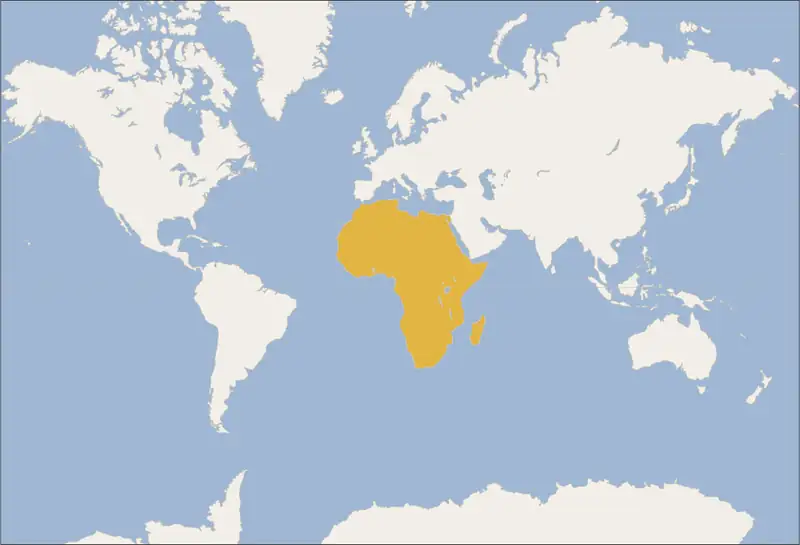
9.1 Africa’s Geography and Climate¶
Learning Objectives
By the end of this section, you will be able to:
- Describe the way geography and climate shaped Africa’s ancient societies
- Discuss the various Neolithic and hunter-gatherer societies in early Africa
Geography played a vital part in shaping early human societies. Landscape, climate, wildlife, vegetation, and the availability of natural resources all helped influence what early societies looked like, whether they were nomadic units that kept animals and survived by hunting and foraging or settled communities that grew crops, tended herds or flocks, and built shelters. Such characteristics depended on factors like weather patterns and soil fertility, as well as the proximity of drinking water and toolmaking resources.
Well-watered regions in Africa, such as the grassy plains of the savannas and the northern and southern fringes of the continent, have historically produced environments that foster settled human communities. Here abundant rain, adequate forestation, and a host of wildlife provided conditions that could support ever-growing populations over long periods of time. More arid regions, such as the narrow transitional belts separating the savannas from Africa’s deserts, experience less rain and have less fertile soil, producing land that cannot be successfully farmed. These areas lent themselves to nomadism and the herding of grazing animals to provide many of the necessities of life, from milk and meat for food to leather and fur for clothing and bones for toolmaking. Throughout most of human history, geography has been an important factor in human development. As a result, exploring Africa’s diverse geography opens a window into the development of the earliest human civilization on the continent.
Geographic Diversity on the African Continent¶
Owing to its position across the equatorial and subtropical latitudes of both the northern and southern hemispheres, Africa is home to a range of climates, including searing deserts, frozen glaciers, sweltering rainforests, and lush grasslands. These divergent environments exist because most of the continent lies between the Tropic of Cancer and the Tropic of Capricorn, in the tropical climate zone. Only its northernmost and southernmost fringes are beyond the tropical area.
Across the center of Africa, stretching like a band from Guinea in the northwest to parts of Mozambique in the southeast, lies a swath of wet, tropical land subject to extremely heavy rainfall. Here we find the deep canopy and undergrowth of Africa’s equatorial rainforest (Figure 9.4). Centered on the Congo River Basin, the rainforest is densest in the present-day central state of the Democratic Republic of Congo. Here there is very little space between trees, resulting in thick layers of leaf covering that prevent much sunlight from reaching the forest floor. Approximately 386,000 square miles in extent, the Congo rainforest is the second largest in the world. Overall, it receives between sixty-three and seventy-eight inches of rain every year.
![A map of Africa is shown. The Tropic of Cancer and the Tropic of Capricorn are labeled. Five different biomes are represented in varying degrees of colors: 1. Tropical/Subtropical Biomes which show Flooded Grasslands and Savannas in light yellow (small areas in several locations all around Africa), Coniferous Forests in green (none on this map), Dry Broadleaf Forests in dark green (located mostly on the northwestern coast of Madagascar and in a small inland location in southern Africa), Grasslands, Savannas, and Shrublands in light green (located throughout most of the middle third of Africa), and Moist Broadleaf Forests in dark green (located on the eastern half of Madagascar, in a thin slice along the eastern coast of Africa, and running in a horizontal section in the middle of Africa). 2. Temperate Biomes which show Broadleaf and Mixed Forests in mustard yellow (none on this map), Coniferous Forests in brown (none on this map), and Grasslands, Savannas, and Shrublands in dark brown (none on this map). 3. Dry Biomes show Deserts and Xeric Shrublands in light orange (located in the north and south and in some small areas in between as well as in the south of Madagascar) and Mediterranean Forests, Woodlands, and Scrub in dark orange (located at the northern and southern tips of the continent). 4. Polar/Montane Biomes which show Boreal Forests/Taigas in denim blue (none on this map), Montane Grasslands and Shrublands in blue (located in the south as well as in the east and in small areas throughout the continent), Rock and Ice in dark blue (none on this map) and Tundra in light blue (located in patches on the eastern side of the continent). 5. Aquatic Biomes which show Lakes in seafoam green (located in the a few spots in the western part of Africa) and Mangroves in pink (shown in small areas along the coasts of the continent and Madagascar).](img/osx-worldhist-a09-01-m-afrbiome.webp)
The Congo River, which forms the heart of the rainforest region, is the second-longest river in Africa; only the Nile is longer. The geographic differences between the environments of these rivers produced vastly different societies. The Nile River and its predictable flood patterns allowed Egyptian civilization to flourish for centuries. Large cities and grand architecture were features of the region due to readily available and plentiful food supplies, and hieroglyphs remained that left a clear and permanent record of key moments of its history. The Congo, however, flows through a tropical region, where dense forests created a very different kind of society, and the moist environment did not allow for recorded history but rather oral stories passed down through generations. Thus, while both regions had a human past, we know far more about one than we do about the other.
Africa’s tropical band is further divided into the monsoon area and the tropical savanna. Wetter than temperate savannas, tropical savannas are characterized by tall grasses, sparse trees, and greater rainfall and are found bordering the equator. The monsoon area is subject to seasonal wind changes that produce wetter and drier periods in isolated locations of the West African coast and the Central African interior. In the tropical savanna, on the other hand, rainfall diminishes considerably, and the dense stands of thickly layered trees that characterize the rainforest give way to forested pockets and lush grasslands.
The savanna is a grassy plain that constitutes another of Africa’s immense biomes. A biome is a community of vegetation and wildlife adapted to a particular climate. At around five million square miles in size, the savanna covers almost half the surface of the continent and has been home to more people and history than any other part of Africa. Stretching from the warm and humid reaches of the rainforest to the torrid zone of the Sahara, it is wetter than the desert but drier than the rainforest and presents a striking geographic contrast to the landscapes of the desert and rainforest. Unlike those areas, the savanna landscape encompasses snow-capped mountains, vast expanses of grassy plains dotted with trees, and marshy tropical areas.
Geographers consider the savanna a region of transitions, with three successive belts running east–west: the Sahel, the tropical grassland savanna, and the woodland savanna. The Sahel, the northernmost band, is a semiarid belt between the Sahara and the grassland savannas to the south (Figure 9.5). It is the driest part of the savanna and experiences rain only periodically during six months of the year.
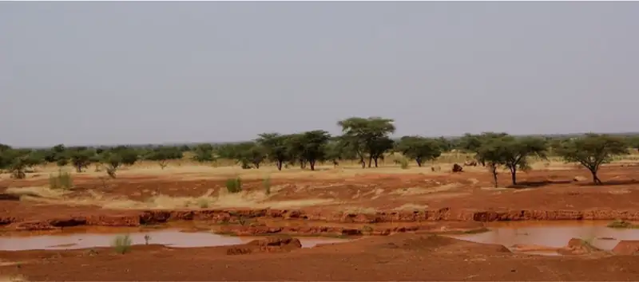
The people of the Sahel have historically been seminomadic—that is, they have adopted a mixed-farming system of crop production and the breeding and raising of livestock. Although the soil of the Sahel lacks sufficient nutrients to grow forests of trees, it is rich in the kind of nutrients that support the growth of plants in gardens as well as those that allow for small-scale farming and foster the growth of abundant grasses for the grazing of larger animals, particularly cattle and sheep. These herding animals also provide a key ingredient to help African farmers grow crops: manure. With the use of manure and the process of composting, the people of the region successfully navigate the challenges posed by their environment. Its conditions have tended to produce limited agriculture and smaller homesteads that are spaced farther apart to accommodate livestock. Many people of the region continue to live a seminomadic lifestyle rooted in animal husbandry. They do not cling to the past, a recurring myth about Africa; rather, their lifestyle is still the best way to harness what their climate provides.
The Sahel gradually gives way in the south to a grassland savanna carpeted by short grasses and studded by scattered trees. At the extreme, this area can see as much as forty-eight inches of rain per year (the rainy season lasts from May to October). The most famous of all Africa’s tropical savannas is the Serengeti. Located in northern Tanzania, the Serengeti is a tremendously diverse ecosystem that witnesses some of the world’s largest mass migrations of animals. In January each year, for example, nearly 1.75 million wildebeests begin migrating out of the Ngorongoro Conservation Area at the southern extreme of the Serengeti, following the rainfall in search of food (Figure 9.6).
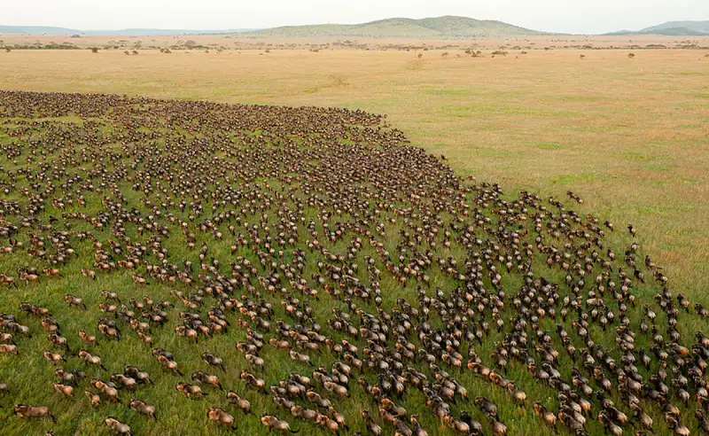
Moving clockwise in a northerly direction toward the Masai Mara Reserve in Kenya, along the way these wildebeests encounter hundreds of thousands of other animals, including zebras and gazelles, that preceded them on their migration. They confront many obstacles and dangers on their trek, including rivers that hide dangerous hippopotamuses and crocodiles, not to mention numerous predators they face on land. When they finally arrive in Kenya, the female wildebeests birth around half a million calves. Their migration comes to an end in early November, after months spent grazing in the savanna grasslands of the Masai Mara Reserve. The herds then migrate south on their return trip to northern Tanzania from Kenya.
Link to Learning
The Serengeti migration is one of the most impressive movements of animals anywhere on earth. Watch a short video of the annual wildebeest migration of over a million of these animals across the Serengeti.
The woodland savanna is the last of the belts separating the great northern desert from the equatorial rainforest. It is characterized by tall grasses occasionally interrupted by scattered trees, and corridors of gallery forests along streams and rivers. The area receives plentiful rainfall, usually nine months of the year, and farmers in the region cultivate palm oil trees and root crops such as yams.
As distance from Africa’s tropical zone increases, so too does the unpredictability of the rainfall. Progressively, to the north and south of this region, the bands of tropical and temperate climate give way to increasingly drier environments. Limits on resource availability in the more arid parts of Africa, as elsewhere in the world, have necessarily restricted the growth and expansion of civilizations. Regions that lack accessible supplies of water in the form of underground aquifers or wells, rivers, or lakes or that receive little rainfall are ill-suited to farming. Because only farming can support larger human population centers, the lack of accessible water is a barrier to human settlement. This helps explain why no large civilizations emerged in the more obviously arid parts of Africa, such as the Sahara and the Kalahari Desert and also why certain of the drier transitional zones between savanna and desert remain so thinly populated.
The Sahel transitions to desert in the extreme north of the savanna belt. Deserts are the sunniest and driest parts of the continent. Africa’s largest desert—in fact, the world’s—is the Sahara. At 3.6 million square miles, about the size of the United States, the Sahara covers much of North Africa (excluding the fertile coastal zones along the Mediterranean and the Nile delta) and stretches from the Red Sea in the east to the Atlantic Ocean in the west. The Sahara has not always been a vast desert, however. In the period following the last Ice Age, this was a lush region that experienced monsoon-like weather conditions and was home to pastoralists and large herds of cattle. In fact, the earliest evidence we have of the domestication of cattle was discovered on Saharan rock art. But between 6000 and 2500 BCE, the region witnessed a great drying, which resulted in the retreat of the rainforest and the expansion of desert zones. These changes prompted crises for the human inhabitants of the formerly tropical zones, who found their old hunting and gathering techniques no longer suitable in the changed environment.
This desertification is what produced the modern Sahara, which receives less than an inch of precipitation per year with variations of some regions experiencing up to four inches per year, while other places go decades with no rain(Figure 9.7). The average daytime high is 99°F, and average nighttime lows are as cool as 68°F, but highs can reach up to 120°F during the warmer months from April to June, and lows can dip below 37°F in the cooler period between December and January. The only plants that can survive in this hostile environment rely on the water that collects in dry riverbeds during the exceptional periods of rain, but they are few.
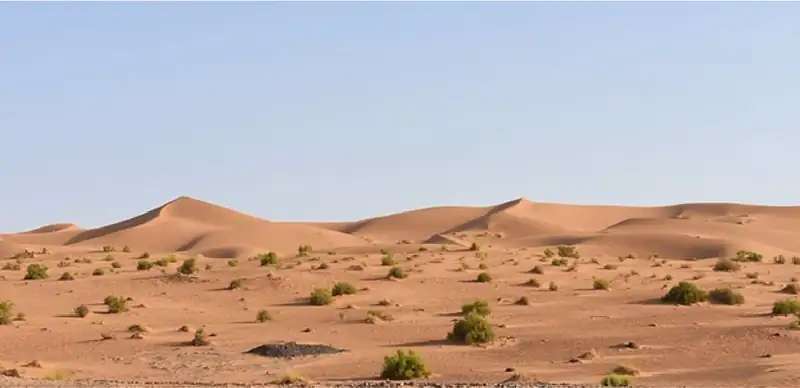
Among the Sahara’s thousand-foot-tall sand dunes, hard stony surfaces, and vast mountain ranges with peaks as high as eleven thousand feet are oases, green dots of civilization formed around underground water sources that reach the surface via wells or springs. Although together these oases take up only eight hundred square miles—about 0.02 percent of the desert’s total landmass—they are home to some three-quarters of the people living in the desert. The remainder of the population are nomads, including the Tuareg and Teda. These peoples engage in a range of economic activities, such as farming and herding, but on a severely restricted basis. Pasturage, for example, exists only in marginal areas such as mountain borders and the somewhat moister areas to the west, limitations that govern the herders’ nomadic lifestyle.
As famous as it is, the Sahara is not Africa’s only desert; there is also a desert region in the African Horn (the area corresponding to Somalia, Ethiopia, and northern Kenya), as well as the Namib and the Kalahari Desert, Africa’s great southwestern desert (Figure 9.8). The Kalahari Desert presents perhaps the most interesting contrast to the extremes of the Sahara.
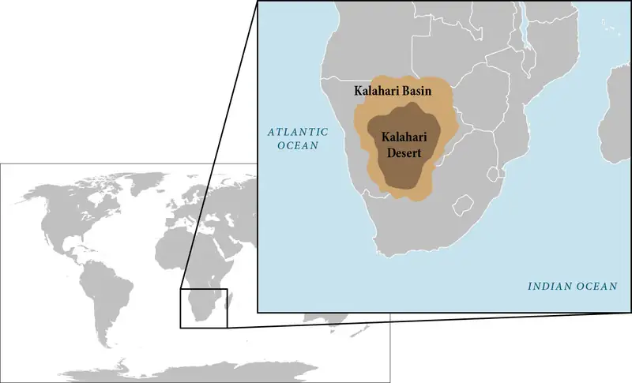
The Kalahari is a semiarid sandy savanna some 350,000 square miles across. Occasionally referred to as the southern African equivalent of the Sahel, it stretches south from modern-day Namibia into South Africa’s Northern Cape province, extends deep into the interior of the South African veld or grassland, and covers almost the whole of Botswana. While Saharan sand dunes are typically large, in the Kalahari they are much smaller, ranging between twenty and two hundred feet high and measuring at least one mile in length and several hundred feet in width. The landscape is also distinguished by numerous “dry lakes” or pans, evidence of a wetter period earlier in the region’s history. Even today, some of the northeastern parts of the Kalahari receive more than ten inches of water per year and thus climatically do not qualify as “desert.” However, they do lack surface water. When they experience rain, it drains instantly through the deep sands, leaving the soil completely devoid of moisture.
Precipitation in the Kalahari depends largely on weather patterns influenced by the Indian Ocean and is highly variable. While the northeastern part receives comparatively abundant rainfall, the southern fringe of the desert sees less than five inches of rain per year. This rainfall accompanies severe thunderstorms, which often appear suddenly and produce violent downpours that deluge the landscape. Still, for six to eight months of the year, the region receives no rainfall. As a result, there is very little ecologically to distinguish the southwestern landscape beyond flat sand plains—aside from a few drought-resistant shrubs and bushes. On the other hand, the central Kalahari, which enjoys more rain, is dotted with scattered trees, shrubs, and grasses. At the extreme end, the northern reaches of the Kalahari appear to be an entirely different biome with woodlands, palm trees, and forests.
The final major climate in Africa is the Mediterranean climate, found only on the northernmost and southernmost fringes of the continent in the coastal regions of Morocco, Algeria, and Tunisia in the north, and in South Africa. The combination of dry summers with lower humidity (relative to the tropical band) and mild rainy winters makes them ideal environments for the growing of olive trees, cereal grains, and grapes—the so-called Mediterranean triad of crops that dot the landscapes of both regions. The temperatures there are pleasant, with average daily highs of 77°F and average nightly lows hovering around 60°F.
Africa also offers regional climates, each with its own local variations. East Africa, for example, straddles the equator and includes Kenya, Uganda, and Tanzania. Along the coast and around Lake Victoria, hot and humid conditions prevail, but there are much cooler climates in the highlands and mountains (Figure 9.9). Many areas of the region experience extreme amounts of rainfall. Coastal islands and the tropical area around Lake Victoria, for example, receive upward of fifty-nine inches of rain per year. To the north, the Ethiopian highlands form a drier climate region, thanks to the influence of the eastern desert. Locally, Africa’s diverse microclimates belie the continent’s broad regional climate patterns and suggest the impressive variety of ecosystems that span it—and to which people have adapted over the millennia.
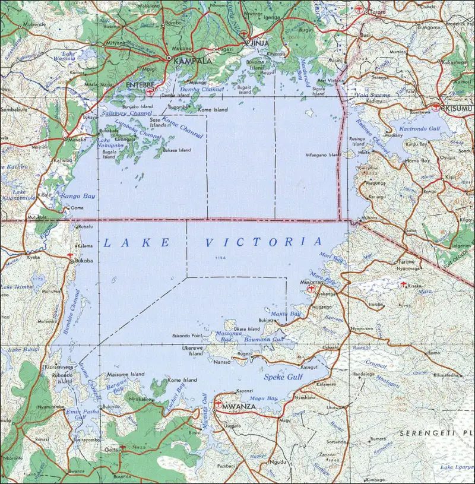
A staggering variety of wildlife has also adapted to these climates. Because of the abundance there of grasses as sources of food, Africa’s savannas are home to a range of large grazing mammals including gazelles, wildebeests, elephants, ostriches, and zebras. Large herds of these animals are commonly seen in the savanna, none more spectacular than the wildebeests on their annual migration in East Africa. Although giraffes, elephants, hippopotamuses, and rhinoceroses can be found in many places on the continent, including modern-day Botswana, Zimbabwe, and Zambia in the interior of south-central Africa and East Africa, one of the greatest concentrations of these animals on the continent is found in the sub-Saharan savanna.
Types of Ancient African Societies¶
The variety of African climates directly influenced the evolution of human societies there. People adapted to these climates in many ways, developing techniques and technologies that both helped them survive and altered their surroundings. Understanding the connection between climate, geography, and humans opens the way to understanding Africa’s early history.
Before the domestication of plants and animals, life in prehistoric Africa was characterized by the hunter-gatherer stage of human civilization. Hunter-gatherers survive by hunting prey and foraging for fruits and vegetables, or by exchanging game for crops grown by others. In some regions, such as Tanzania and Kenya in East Africa and Botswana in southern Africa, hunter-gatherers followed the seasonal migrations of large game animals, such as wildebeests and elephants. Hunter-gatherers do not plant crops or build permanent shelters but rather live nomadic lifestyles guided by the seasons, limited resource availability, conflict with other groups, or a combination of these factors. They must be highly mobile so their communities tend to be small, consisting of only several dozen interrelated people. Their mobility means that they often play an important role in connecting different regions and cultures and in transmitting goods and ideas across great distances.
Hunting and gathering peoples of Africa have historically included the rainforest-dwelling Baka of Central Africa and the San people of the Kalahari Desert. The Baka, found today in Cameroon, Gabon, and northern Congo, eat wild roots, nuts, fruits, vegetables, a variety of insect species, fish, and wild game they hunt using bows, poison-tipped arrows, and traps (Figure 9.10). Baka villages are made up of small single-family huts of branches and leaves, built predominantly by women and usually dismantled after about a week so the Baka can follow the available food supply. Baka society has a well-defined structure. In addition to building the family hut, women also dam small streams to catch fish and carry material gathered while foraging with their husbands. Men hold a higher social status derived from the fact that they engage in the more hazardous task of hunting and trapping animals.
![A sepia-colored picture of eight unsmiling people are shown standing in a line on dry ground. They are barefoot, dark skinned, and bare chested with short hair. They all wear rough cloth tied around their waist that goes down to their knees. Some of the cloths have frayed edges and some have ruffles. The last man wears a dark cloth that hangs down to his ankles. The first person wears a square cloth on their head, the second person wears a very dark feathery round object at the front of their head. The seventh person wears a round spray of dark and light feathers on the back of their head and the last man wears a dark bowler hat. In the background there are straw huts, a wooden fence, and trees.](img/osx-worldhist-a09-01-baka.webp)
Like that of many other African peoples, the Baka religion was and remains centered on a belief in animism—that is, it teaches that certain objects, places, and creatures have spirits. Those who can interpret what those spirits desire have positions of leadership. Animism is also polytheistic, meaning it has numerous gods, each of whom typically personifies a natural force such as rain, wind, or lightning. Given the impact of weather on survival, it is not surprising that trying to control the natural environment was a key factor in religious observance. Among the gods of the Baka are Kamba, the creator of all things, and Jengi, the spirit of the forest. The Baka live in and rely on the forest for their survival, so they view Jengi as a parental figure and, perhaps most importantly, the protector of the forest.
Although ancient African religions were remarkably complex, and their rituals, practices, and beliefs varied greatly among the continent’s diverse populations, some commonalities can be identified in the pre-Judaic, pre-Christian, and pre-Islamic periods, including polytheism. Another typical feature of the pantheon of traditional African deities is a supreme being, like the Ngai of the Kikuyu, held to be the creator god from whom the universe originated. The supreme being was a distant deity who played no role in the ordinary affairs of Africans. Instead, management of the day-to-day fell to specialized secondary deities, such as Obatala, the Yoruba god of earth, and Makasa, the Baganda god of harvest and fertility. Other shared features of many ancient African religions include the worship of ancestors as protectors and guides and ceremonial practices to mark important life events, such as the Bantu Okuyi, a rite of passage celebrating the transition between youth and adolescence.
The San people of southwest Africa were and remain seminomadic hunter-gatherers and are polytheistic (Figure 9.11). Their diet is dictated by the arid conditions in which they live. Lack of water in the Kalahari Desert means there are fewer vegetables and fruits to forage, although seasonal nuts, plant buds, and certain roots are food staples. The San also hunt a variety of big game animals, including giraffe and antelope species such as kudu and hartebeest, using poison-tipped arrows and traps. They do not build permanent homes. Rather, their shelter types vary by season: they erect nightly rain shelters in the spring, when they move constantly in search of budding greens, and in the dry season, when water is scarce and most plants are dead or dormant, they congregate around the only permanent water holes in the area.
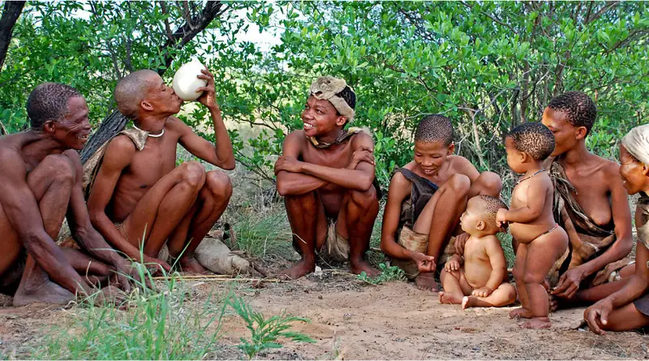
The hunt is a key part of San society, and all the San gods have jobs related to it. The supreme deity Cagn ensures a successful hunt, often by protecting the San hunters from animals or people who could endanger the hunt. Hei-tusi the hero god assists Cagn in leading and protecting the hunt. To these are added a host of lesser spirits, including predators and tricksters.
The most important of the San religious rituals depends on the hunt. The curing or great trance dance is initiated by a San shaman through the hunting of a “power animal” such as an antelope, whose fat is believed to have supernatural potency and is used in different ritualistic settings, including rites of passage. The shaman enters a trance-like state after a night-long dance around a fire surrounded by clapping women. The San believe the trance dancers can be affected physiologically and mystically by the ritual, giving them powers to heal or provoking in them an out-of-body experience. The dance, often depicted on ancient San rock art, is the key source of all spiritual knowledge for the San and is often prompted at times of great social stress such as during times of settler incursion, outbreaks of disease or illness, and poverty.
9.2 The Emergence of Farming and the Bantu Migrations¶
Learning Objectives
By the end of this section, you will be able to:
- Discuss the introduction and emergence of farming in Africa
- Analyze the origin and impact of ironworking technology in Africa
- Describe the geographic extent and impact of the Bantu migrations
For tens of thousands of years, people across Africa lived in relatively small groups and relied on hunting and gathering. This lifestyle began to change dramatically beginning around 7000 BCE when plant and animal domestication methods from the Fertile Crescent were first adopted in Africa. Often called the Neolithic Revolution, the adoption of domestication led some groups to build permanent settlements and support large populations. Over thousands of years, these methods spread up the Nile River and across North Africa. Below the Sahara, plant domestication was developed independently in both the east and the west as the people in those areas learned to cultivate their own unique plant varieties. By approximately 1000 BCE, large populations in both north and sub-Saharan Africa supported themselves by working the land. This wave of transformation effectively transformed the continent and over time led to the emergence of a number of large and sophisticated civilizations.
The Emergence of Farming¶
Although scholars still debate the origins of agriculture in Africa, there is a general consensus that agriculture emerged in three distinct regions: along the Nile River in Egypt, in the eastern Sahara of Sudan, and in the great bend of the Niger River of West Africa. The oldest evidence for agriculture in Africa can be found in Egypt along the Nile River valley. There, sometime after 7000 BCE, agricultural technology and knowledge about the domestication of wheat, barley, sheep, goats, and cattle were introduced into the region, likely from southwest Asia. The introduction of these methods transformed the region and put Egypt on the path to greatness. Over the next few thousand years, these practices were disseminated west across North Africa to Libya, Tunisia, Algeria, and Morocco.
In the grasslands south of the Sahara, agriculture emerged independently. The origins of that process can be traced to as early as 9000 BCE, when the Nilo-Saharan people of the region began to adopt the grain-collecting and grinding techniques of their northern neighbors and applied them to sorghum and pearl millet, the tropical grasses of the Nile region. These changes were made possible by a millennia-long wet phase beginning around 11,000 BCE. During this period, monsoon-like weather conditions prevailed, drenching the region of the Sahara and creating lakes and a lush landscape covered in grasses and acacia forests that was home to countless varieties of wildlife. By around 8000 BCE, the Nilo-Saharans had domesticated wild cattle of the Red Sea hills and had begun to produce pottery they used to store and cook these grains. By as early as 6000 BCE, the gathering of these wild grains had begun to evolve into deliberate domestication. Over the next few thousand years, the Nilo-Saharans domesticated a host of other plants, including watermelons, cotton, and gourds.
Agriculture also emerged independently, far to the west of the Nilo-Saharans in the bend of the Niger River of West Africa. There, the domestication of yams by the Niger-Congo peoples developed gradually and likely in a piecemeal fashion beginning possibly around the same time the Nilo-Saharans of the eastern Sahara were adopting agriculture. Certainly, by 3000 BCE, the Niger-Congo peoples of West Africa were actively clearing land with stone tools to plant crops such as yams, the oil palm, peas, and groundnuts. Over the next couple thousand years, the Niger-Congo peoples also domesticated a uniquely African variety of rice, which they grew in the wetlands of the Niger River region.
Link to Learning
In this article, the ancient climate and geography of the Congo River Basin are examined.
The impact of farming was enhanced by advances in metallurgy. Bronze was introduced into Egypt from the Near East and Eastern Mediterranean a little before 3000 BCE. From there, bronze technology was gradually disseminated west across North Africa as well as south up the Nile into sub-Saharan Africa. Being far harder than the farming materials these populations were previously using, the introduction of bronze greatly increased agricultural production. Unlike wooden plows, which allow only scratch farming, bronze-bladed plows pulled by oxen could dig deep into the ground and turnover large amounts of earth.
Iron tools in Egypt during the Bronze Age were not unknown. Indeed, an iron dagger was placed in Pharaoh Tutankhamun’s tomb in 1323 BCE, and archaeologists have found several hundred iron objects in sites around the Near East and Eastern Mediterranean which date to centuries before the start of the Iron Age. Most of these iron objects, however, were ornamental and include things like iron jewelry. It was only after about 1000 BCE that the number of iron tools began to overtake the number of bronze tools across the Near East. The reason for this is that iron is far more difficult to produce than bronze. The types of iron objects that could be produced earlier were inferior to bronze in strength, which is why the early objects tended to be ornamental. Only during the Late Bronze Age Collapse (1200–1100 BCE), when tin was difficult to acquire, did people begin experimenting with iron more seriously. By about 900 BCE, numerous blacksmiths around the Near East had mastered the art of creating iron tools that were far superior in strength to bronze. Evidence of sophisticated ironworking technology in Egypt dates to the seventh century BCE, introduced to the area from other parts of the Near East.
For many years, modern historians assumed that ironworking technologies spread to other parts of Africa from Egypt. The prevailing consensus now, however, is that ironworking technology was likely developed independently in sub-Saharan Africa. Most modern scholars agree that iron smelting in sub-Saharan Africa likely preexisted its introduction into Egypt by a few centuries. The earliest evidence dates to about 1000 BCE and comes from Central Africa—modern Chad, the Central African Republic, and South Sudan. From there the technology appears to have spread west to the Niger River area and, by 500 BCE, was being used by the Nok culture of West Africa.
Settling around the confluence of the Benue and Niger Rivers in present-day Nigeria, the Nok initially used iron to fashion jewelry. Eventually they began using it to make farming tools and weapons as well. The obvious utility of iron for fashioning tougher and more durable tools used to clear forests, aerate land, and dig trench-based irrigation systems led others to adopt the new material. As a result, over the next several centuries, ironworking technology spread around West Africa and later far beyond. In the hands of migrating Bantus, iron technology was indispensable. They used iron tools to clear the surrounding trees and extended prehistoric irrigation systems by digging deeper furrows, shored up with embankments, to create Iron Age farms. In the process, they spread ironworking technology throughout equatorial and subequatorial Africa.
Beyond the Book: The Iron Age in Africa
It had been thought that ironworking originated in modern-day Turkey around 1500 BCE. However, new evidence suggests that the discovery of iron metallurgy happened in Central Africa—modern Chad, the Central African Republic, and South Sudan—around the same time, likely as a by-product of firing ceramics. Today, most modern scholars agree that iron smelting in sub-Saharan Africa likely preexisted its introduction into Egypt by a few centuries with the earliest evidence dating to about 1000 BCE.
Ironworking revolutionized human civilization in Africa. It helped make large-scale agriculture possible because it produced stronger tools for farming, including shovels and furrow-diggers. Iron axes and knives enabled Africans to clear paths through the densest parts of the Central African rainforest. In so doing, they exposed new areas for settlement and opened corridors between historically isolated regions, connecting them for the first time.
These corridors allowed for migration as well as the diffusion of cultures, a process that introduced to other prehistoric peoples not only new technologies but also new languages and the innovations of the Neolithic Revolution: the domestication of plants and animals. The advent of iron metalworking was a vital component in the laying of common cultural foundation throughout much of southern Africa and utterly transformed the societies found there.
Watch this short video about the origins of ironworking in Africa to learn more. Pay close attention to the circumstances that led to the discovery of iron smelting in Africa and why iron metallurgy proved so revolutionary to the societies that adopted it.
- How was iron discovered in Africa? What were some of the first uses of iron?
- In what ways did iron transform African societies?
- Can you name other discoveries/innovations that had a similar impact on human civilization? What were they, and what was their impact?
The Bantu Migrations¶
The word “Bantu” is a modern term invented by linguists who have studied the languages of Africa. The word is made up of the common stem “ntu” and the plural prefix “ba” which put together literally means “people.” It describes a large and geographically widespread subfamily of African languages that make up part of the larger Niger-Congo language family. There are well over four hundred known Bantu languages spoken today across a large portion of the southern half of Africa (Figure 9.12). Linguists believe that these similar languages derived from an ancient parent language often described as “proto-Bantu.”
![A colorful map of Africa is shown. The water surrounding it is in ombre shades from white to blue, from north to south. The northwest portion of the continent, parts of the north, the eastern horn, and some small areas just north of the middle of the continent are highlighted lime green to represent “Afro-Asiatic.” Areas highlighted red toward the middle of the country represent “Nilo-Saharan.” Most of the middle and southern portion of the country are highlighted purple representing “Niger-Congo.” The island of Madagascar off the east coast of Africa is highlighted yellow representing “Austronesian.” A bright green area representing “Indo-European” is located at the southern tip of the continent. Small areas throughout all of Africa are highlighted off-white along with a large area in the north representing “sparsely populated.”](img/osx-worldhist-a09-01-m-afrlang.webp)
Theories about the spread of the Bantu speakers have changed over the last several decades. For example, it was once believed that the spread occurred relatively recently, meaning over the last several centuries. It was also assumed that the process took the form of conquering bands of Bantu speakers who subjugated or even annihilated those they came into contact with. We know now that the process began several thousand years ago and proceeded in a piecemeal fashion as small groups of Bantu speakers spread across the larger area, integrating and intermarrying into the largely hunter-gatherer communities they met.
It is generally accepted today that the original proto-Bantu speakers emerged and lived in the area between modern-day Nigeria and Cameroon in West and Central Africa. A Neolithic people, the proto-Bantu were farmers who subsisted by cultivating pearl millet and yams and extracting oil from the abundant palm and bush candle trees of the region’s luxuriant rainforests. Gradual changes in weather patterns caused the rainforests to recede and, together with increasingly seasonal (rather than constant) rainfall, opened tracts of savanna between forested areas. Over time, these open patches merged to form the Sangha River Interval, a 200-mile-wide grassland running north–south between modern-day southeastern Cameroon, southern Central African Republic, and northern Republic of Congo. This grassland corridor allowed the previously forest-dwelling Bantu to move southward, through what had once been impenetrable tropical rainforest.
The expansion of the Bantu speakers beyond that region and across other parts of sub-Saharan African likely began between 3000 and 2000 BCE and is referred to as the Bantu migrations (Figure 9.13). Although scholars debate the precise timing, motivation, and directions of these migrations, linguistic evidence and archaeological traces of pottery and ironmaking technology suggest there were multiple waves. The earliest seems to have consisted of two phases: an initial eastern stream or “early split,” and a somewhat later western “rivers and coasts” stream. In both phases, pioneering groups moved gradually and sporadically, first proceeding eastward across the northern reaches of the Congo Forest and arriving in the Great Lakes region of East Africa around 1500 BCE.
![A map of Africa is shown along with portions of the Middle East to the east with the continent in gray and the waters in blue. A black dot with the number “1” printed inside is located in west central Africa representing “2000–15000 BCE origin.” Two arrows project out from the dot – one heading southeast labeled “2a” representing “Eastern African” and one heading south labeled “2b” representing “Western African.” A black dot with the number “3” representing “1000-500 BCE Urewe nucleus of Eastern African” is located in the east center of Africa inland from the coast and has three arrows projecting out – one heading east labeled “6,” one heading south labeled “7a,” and one heading west labeled “4,” all representing “Southward advance.” A black arrow runs along the southeastern coast of the continent and is labeled “7b” representing “Southward advance.” Another black arrow runs along the southwestern coast and is labeled “5” representing “Southward advance.” The key also shows the number “2” representing “ca. 1500 BCE first migrations.”](img/osx-worldhist-a09-02-m-bantumig.webp)
Dominated by the Urewe culture, the Great Lakes region was one of the oldest centers of iron smelting in Africa. It was likely from the Urewe that the Bantu learned the iron-forging techniques that enabled them to later produce carbon steel. The Urewe also produced the earliest East African Iron Age pottery, called Urewe ware. Confidently dated to between the second and fifth centuries CE, Urewe ware is found in the Great Lakes region and is recognizable by the distinctive indentation on the bases of its bowls and pots, which gives it the name “dimple-based” pottery. Kwale ware, a related style, has been discovered in the region to the east of the Rift Valley, in southern Kenya and northern Tanzania. Kwale ware appears to be an offshoot of the earlier Urewe ware and dates to the Early Iron Age, around the third century. Archaeologists and historians have traced the southward thrust of the eastern stream of Bantu in the third and fourth centuries by uncovering Iron Age slag sites and related styles of pottery in Malawi and Mozambique.
As small clusters of Bantu advanced into modern Kenya and Tanzania, some turned toward Congo, while other groups pushed southward in the direction of southern East Africa. By the seventh century, Bantu communities stretched from the extreme southern reaches of Somalia in the north to Natal and Eastern Cape in present-day South Africa. Along the way, they created key cultural elements that were the bases for later civilizations, including the Swahili speakers of the East African coast.
The western stream of Bantu migration progressed considerably more slowly than the eastward stream, advancing south along the West African coast into modern Gabon and the Democratic Republic of Congo, with small groups branching off to follow the Congo River system inland as early as 1500 BCE. Early Iron Age farm settlements dating from around the second century CE have been uncovered in southwestern Congo, near Kinshasa, but some of the most impressive and revealing evidence of Iron Age Bantu settlements comes from the savanna woodlands around Lake Kale in southeastern Congo. Here, archaeologists have uncovered evidence of extensive copper and iron smelting, with copper used for trade and to fashion jewelry, while iron was forged into tools and weapons. The westward stream penetrated deeper into the south-central African interior, where Kalundu and Dambwa pottery, Early Iron Age styles specific to this flow of Bantu, have been identified in the Zambezi valley. This evidence dates to the same period of southward expansion that has been linked to the eastward early split Bantu.
It was not until the early centuries of the Common Era that the western stream penetrated Angola in the far southern extreme of West Africa. Around this time, East Africa witnessed a third phase of Bantu expansion, with groups moving through and settling in parts of modern Mozambique, Botswana, and eastern South Africa. It appears that all three streams of Bantu migration—the western stream, the early split, and its later southward-bound branch—converged on the Zambezi valley (Figure 9.13). By 500 CE, all parts of the vast tropical rainforest had been settled by Bantu farming communities. Populations of Bantu-speaking peoples could now be found throughout southern Africa, from the savanna woodland south of the Congo forest and that of northern Namibia in the west, to the Great Lakes region of East Africa, western Tanzania, and eastern Botswana in the east, to the Transvaal high veld, Natal, and Eastern Cape in the south.
Link to Learning
As the Bantu migrated, did they arrive as conquerors, colonizers, or explorers? Listen to the BBC’s “The Story of Africa” and learn more.
The Bantu were among the earliest groups to benefit from the diffusion of farming, herding and animal keeping, and advanced metalworking technologies, and they dispersed across the continent changing its linguistic and cultural landscape along the way. Pioneers originating in West and Central Africa advanced sporadically as small groups of people moving from one point to another. During the earliest centuries of expansion, groups of Bantu arrived in regions that were only thinly populated by groups of nomadic hunter-gatherers. The land was unsettled, enabling the Bantu to select the best sites for their farms, and because there was no need to clear thick forest or adopt new techniques to suit a difficult environment, their expansion across the subcontinent proceeded relatively rapidly. New generations could simply move to new areas. Initially, then, Bantu farm settlements were typically confined to fertile river valleys and regions with favorable rainfall—which helps explain why they moved toward the southeast, a path that avoided the much drier southwest.
The situation changed, however, as the birth of each new generation put pressure on a given area’s limited resources. Growing needs necessitated further expansion, and as the Bantu advanced into the rainforest—their path helpfully cleared with new iron tools—they began to adjust their cultivation techniques to a variety of conditions. Although it may seem so, the tropical rainforest is not—and has never been—a uniform ecosystem: its topography and climate vary greatly from river valleys and swampy regions to dense forest canopies and plateaus, and across highlands and lowlands. Each of these environments requires different cultivation techniques, knowledge the Bantu acquired only after their gradual occupation of all parts of the rainforest and centuries of experimentation and adaptation. Their efforts were so effective that by the sixth century CE, Bantu farming communities had settled in virtually all parts of the tropical rainforest.
But the Bantu did not stop at the rainforest. Rather, they continued to drift southward and eventually emerged into the southern savanna, where they found an environment not unlike the grasslands they had encountered north of the rainforest. Like the rainforest, southern Africa was also lightly populated by foragers and hunter-gatherers, leaving vast swaths of land open for the Bantu farmers to inhabit. They expanded into this region seeking new land, a migratory process repeated by generations of their successors. Initially, the diffusion of the Bantu speakers south of the rainforest followed an easterly direction and hugged the southern and eastern edges of the rainforest. When they began to settle around Lake Victoria, the Bantu acquired cattle. From there, a general dispersal into eastern and southern Africa began.
Although the areas into which the Bantu migrated were only sparsely populated, interactions with the peoples who already lived there were unavoidable. It is not entirely clear what these meetings were like, but evidence suggests that interactions were complex and included elements of cultural absorption and assimilation as well as displacement, often at the same time. Early on, the Bantu moved in relatively small numbers, so there were no large-scale displacements of hunter-gatherer societies. It was some time before the Iron Age farmers came to dominate their Neolithic contemporaries.
At first, there was enough room for both societies to coexist in relative harmony. Oral tradition and linguistic evidence indicate that the Bantu intermingled with some of these populations, including rainforest-dwelling peoples such as the Twa and the Khoekhoe herders of South Africa. Had it not been for the rainforest dwellers, the Bantu may have had a far more difficult time adjusting to the environment. Indeed, Bantu oral tradition holds that it was rainforest dwellers like the Twa who taught them to adapt. It is also likely that the Bantu acquired their cattle—or at least their cattle-herding techniques—from the Khoisan, a cattle- and goat-herding people who preceded them in southern Africa. In fact, many of the words in the southern Bantu language that relate to cattle and cattle-herding practices are derived from Khoisan. This linguistic heritage is reinforced by the presence today of Khoisan “click” sounds in certain Bantu languages, particularly those of the south.
Yet displacements did occur. The peoples who dwelled in the rainforest had all descended from a common population, but the arrival of the more technologically advanced Bantu farmers caused them to scatter into separate groups. On entering San territory, for example, the Bantu farmers displaced the previously dominant San and Khoekhoe peoples, the first inhabitants of South Africa. Forced from their home territories by the Iron Age farmers, the San and Khoekhoe embarked on their own widespread migrations. The Bantu were not dominant everywhere in southern Africa, however. In the drier, sandier areas of the western Kalahari Desert and Namibia, Khoisan speakers remained the dominant group until more recent times.
Overall, the Bantu migrations had a significant impact on Africa’s economic and cultural practices. As they migrated, the Bantu encountered different groups whose adaptations to their environments had produced innovations in plant and animal husbandry and metalworking. The Bantu borrowed and adapted these over a generations-long expansion across and throughout sub-Saharan Africa, forging a package of common cultural advances that they gradually diffused among the peoples in the areas they settled. In the long term, the Bantu laid a common cultural framework throughout much of sub-Saharan Africa. This enabled them to forge complex settled societies that later became the bases of large African states, such as medieval Great Zimbabwe, that could dominate whole regions.
9.3 The Kingdom of Kush¶
Learning Objectives
By the end of this section, you will be able to:
- Explore the origins and rise of the Kingdom of Kush
- Describe the relationship between the Kingdom of Kush and Egyptian culture
- Analyze the transformations in Nubia following the founding of Meroe
The traditional southern boundary of Ancient Egypt was the first cataract of the Nile. A cataract is a place in a river where the otherwise placid flow is upset by a waterfall, a shallow portion, or the presence of boulders that make the river impassable by boats. Downriver of the first cataract, the river is largely unobstructed and serves as a fertile highway skirting through an otherwise desert and connecting the Egyptian settlements and facilitating the dissemination of a uniform Egyptian culture. Since the cataract served as a physical barrier, it largely limited Egyptian influence south of it and thus allowed distinct cultures and kingdoms to emerge along the upper reaches of the Nile.
Nubia was the name Egyptians gave to the expansive area south of the first cataract and extending into sub-Saharan Africa. The kingdom that first emerged in Nubia was called Kush. Because of its location along the Nile, throughout its long history the Kingdom of Kush was culturally influenced by Egypt. However, because it was sufficiently distant from Egypt, it also had the liberty to develop its own traditions, culture, language, and impressive history.
The Origin and Rise of the Kingdom of Kush¶
The history of the Nubian Kingdom of Kush is bound up in the history of Egypt, its northern neighbor. It was heavily influenced by Egypt throughout much of its long history. And at one point during the eighth century BCE, a line of Kushite kings even sat on the throne of Egypt. At that time, the kingdom stretched from the Nile delta south to the confluence of the Blue and White Niles outside Khartoum, the capital of present-day northern Sudan (Figure 9.14). But the origins of the Kingdom of Kush date back almost two thousand years before that impressive period.
![Two maps are shown. A very tiny gray and blue map is shown in the top left corner of the continent of Africa with a black square located toward the northeastern portion. A larger map shows this black square enlarged. The Mediterranean Sea is to the north, the Red Sea is to the east, and Egypt and most of Sudan is shown in Africa. An area in southern Egypt and northern Sudan is highlighted pink to represent “Lower Nubia.” A “U” shaped area below the green in Sudan is highlighted green to represent “Lower Nubia.” The Nile River is labelled and highlighted yellow from north of Cairo in Egypt down to north of Khartoum in Sudan. Past Khartoum it splits off into the “Blue Nile R.” and the “White Nile R.” Six circles are shown along the Nile River in Upper and Lower Nubia to represent “Cataract,” with the First and Sixth Cataracts labelled. Between the city of Cairo and the city of Khartoum these locations are labelled, from north to south: Lower Egypt, Eastern Desert, Western Desert, Upper Egypt, Kush, Kerma, and the Nubian Desert.](img/osx-worldhist-a09-02-m-nubia.webp)
Although the earliest period of Nubian history is shrouded in mystery, we do know that kingdoms from Nubia engaged in trade with the Egyptian Old Kingdom (c. 2686–2181 BCE). Goods of particular interest to the Old Kingdom Egyptians seem to have been ostrich feathers, ivory, ebony, incense, and especially gold, a commodity that played a vital role in pharaonic ritual and ceremony. For example, craftspeople used Nubian gold to fashion the sarcophagus mask of Tutankhamun, arguably Egypt’s most famous pharaoh.
The earliest Nubian state arose sometime around 2400 BCE and was organized around the city of Kerma (in present-day northern Sudan) located just south of the Nile’s third cataract in a lush floodplain ideal for agriculture and the pasturage of animals. The city’s wealth and prosperity were symbolized by its great walls, behind which lay a palace, religious buildings, dwellings, and roads, as well as a funerary complex that included a temple and chapel. At the heart of the urban center lay a large temple known today as the Western Deffufa. A deffufa is a form of mud-brick architecture specific to Nubia. There are three known deffufas in the area today. Of these, the two best known are the large Western Deffufa and less well-preserved Eastern Deffufa some two kilometers away. The Western Deffufa is an impressively large three-story temple reaching nearly sixty feet in height. Religious ceremonies (possibly involving ancestor worship, although we do not know their actual nature) were held in this massive structure (Figure 9.15). At its height, around the eighteenth century BCE, Kerma may have supported a population of about ten thousand people.
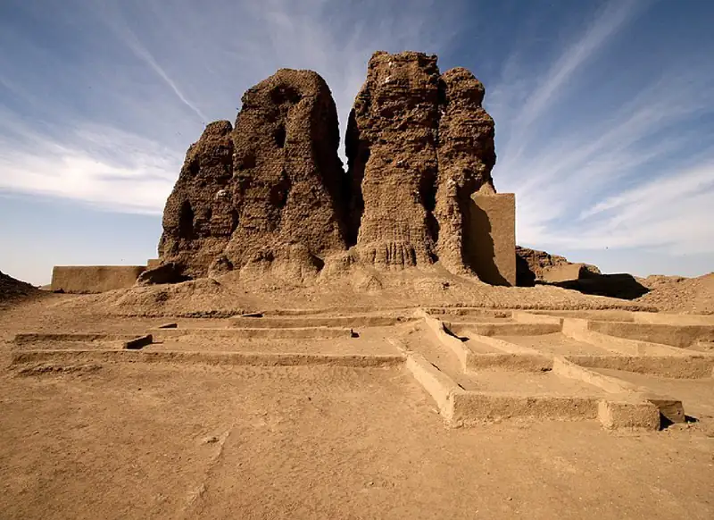
It seems to have been the Egyptians who first referred to the Nubian city-state of Kerma as “Kush.” Beginning during the rise of Egypt’s Middle Kingdom (2040–1782 BCE), the Egyptian state initiated a centuries-long but intermittent expansion southward, a process that entailed the establishment of fortresses to consolidate its control over regional trade. Over time, its trade with Kush grew, and the area became increasingly wealthy. Although the Egyptians’ southward advance was periodically stymied, usually by internal political problems occasioned by the death of a pharaoh and the chaos that ensued, their progress seemed inexorable.
When the Middle Kingdom collapsed and the Second Intermediate Period (1782–1570 BCE) began, trade and Egyptian contact with Kush declined. This left the Egyptian fortresses to fend for themselves. For a short time, the fortress communities attempted to become independent entities. But by at least 1650 BCE, the expanding power of the emerging Kingdom of Kush absorbed them. As this happened, the Kingdom of Kush also adopted elements of Egyptian culture, integrating Egyptian artistic styles and technology into their practices. Additionally, the leaders of Kush during this time cooperated with Hyksos-controlled Lower Egypt to keep the native Egyptian center of power located at Thebes weak.
Leaders in Kush had good reason to believe that a strong Egypt threatened their survival. And when the native Egyptian rulers began to grow their power and inaugurated the New Kingdom (1570–1069 BCE), they soon expanded into Kush. By the time Pharaoh Thutmose I came to the throne in about 1506 BCE, the Egyptians had extended their control of the Nile valley as far as the Nile’s second cataract. Thutmose was determined to conquer Kerma. His forces sacked and burned the city, desecrating its great temple with the unsettling inscription, “There is not one of them left. The Nubian bowmen have fallen to slaughter, and are laid low throughout their land.” Decades later, Thutmose III built a temple to the god Amun at Napata, just below the fourth cataract of the Nile. For the next five hundred years, Egypt controlled Nubia, and the region was further Egyptianized—that is, it was made Egyptian in character. The Kingdom of Kush was crushed as New Kingdom pharaohs asserted their control over Nubia, constructed Egyptian-style architecture, and promoted the use of Egyptian hieroglyphs on temples and Demotic (ancient Egyptian) script by the region’s Egyptian administrators.
In Their Own Words: The Nubian Travels of Harkhuf, Egyptian Governor of Aswan
Nubia was rich in resources, and Egyptian pharaohs often sent provincial governors there to trade for gold, ivory, and feathers and recruit soldiers. Following is an excerpt from the travel writings of Harkhuf, an Egyptian noble from Aswan in southern Egypt. Harkhuf held many titles, including governor of the south and ritual priest. A caravan trader by profession, he made multiple journeys into Nubia for the Old Kingdom monarchs, the details of which were inscribed on his tomb.
“The majesty of Mernere, (my) lord, sent me together with (my) father, the “sole companion” and lector-priest Iri, to(wards) Yam (Upper Nubia) in order to explore the way to this country. I accomplished it within seven months, and I brought all kinds of products therefrom, beautiful and exotic. I was much praised about it. When his majesty sent me a second time, I was alone: I went forth on the “Ivory Road” and I descended from Irthet, Mekher, Tereres, Irtheth in a period of eight months. And I went down, and I brought (back) of the product from this country very much, the like of which had never been brought to this land (i.e. Egypt) before. And when his majesty sent me a third time to Yam, I departed from the Thinite districts on the Oasis Road. I discovered that the chief of Yam had gone by himself to the land of Temeh in order to beat Temeh to the western corner of heaven. When I had gone out in his support to the land of Temeh, I appeased him, so that he was praising all gods for the sovereign . . . I descended with three hundred asses loaded with myrrh, ebony, heknu, grain, leopard skin, ivory tusks . . . (and) all beautiful products. And when the chief of Irthet, Sethu, and Wawat saw that the troops of the Yamians, who had descended with me for the Residence, and the soldiers, who had been sent with me, were strong and numerous, then this chief supported me and gave me cattle and goats and showed me the ways of the ridges of Irthet, as the vigilance which I carried out was more excellent than that of any associate-overseer of mercenaries sent to Yam before. —Harkfuf's tomb inscription”
- Why were the Egyptian kings interested in Nubia?
- What does the excerpt suggest about the strength of the Nubian army?
With the decline of the New Kingdom and the beginning of Egypt’s Third Intermediate Period (1069–525 BCE), local leaders in Nubia were able to reassert their independence. As Egypt withdrew, Nubians built up a new independent Kushite kingdom around the city of Napata, just above the fourth cataract and beyond the Nile floodplain but within the zone of tropical summer rainfall and a region of fertile soil. Despite efforts to assert a specifically Nubian culture, the rulers at Napata were still largely Egyptianized—they built temples to Egyptian gods in Egyptian styles, increased trade with Egypt, and governed their state along Egyptian lines.
By the year 736 BCE, the Kushite kingdom centered on Napata was growing in power and influence, as evidenced by the fact that a Kushite king named Piye managed to install his own sister as high priestess of Amun in Thebes. Such a move was tantamount to an assertion of Kushite authority over Upper Egypt itself and appears to have precipitated a war. During the war, King Piye of Kush marched his army down the river to the Nile delta, effectively conquering all of Egypt. This move inaugurated a period of Nubian rule in Egypt that lasted for several decades. Egyptologists refer to this unique period as the Twenty-Fifth Dynasty or the Ethiopian dynasty.
The Nubian leaders who ruled Egypt during this period were thoroughly Egyptianized in culture and religious traditions. As a result, they ruled as Egyptian leaders, carefully preserving Egyptian cultural practices and traditions as a way to strengthen legitimacy. Like other pharaohs, the Kushite pharaohs wore the traditional double crown, promoted the worship of Egyptian deities, and constructed architectural testaments to their rule in the Egyptian style (Figure 9.16).
![A broken piece of a long rectangular stone shown vertical on a solid black background is pictured. Hieroglyphs are carved from the top to the bottom. There is an oval with a pedestal at the bottom and three carvings inside. At the top is a decorative carving that has three tall broom-like projections and then two smaller spears in between them, all placed on a horizontal oval etching. Next is the carving of a large four-legged animal resembling a ram with long twisted horns on the sides of his head. At the bottom are two arms connected to each other in a “U” shape with palms facing straight up.](img/osx-worldhist-a09-02-chabaka.webp)
The Meroitic Period in Nubia¶
The rise of the Neo-Assyrian Empire and completion of its conquest of Egypt in 656 BCE brought an end to Nubian rule in Egypt. The Kushite leadership fled Thebes and reconstituted their kingdom at a new capital, Meroe, located well south of the fifth cataract. This effort inaugurated the Meroitic period of the Kingdom of Kush. Sometimes called the Island of Meroe because of the way the Nile and Atbara rivers flowed around it, the new capital had several distinct advantages. One advantage was its distance from Egypt, which helped to protect it from raiding and conquests coming from the north. Another advantage was the plentiful iron ore in the surrounding land. As discussed previously, iron smelting technology had only recently reached Egypt in the early 600s BCE. But after facing the well-trained iron-wielding army of Assyria, the Kushite leadership came to appreciate the utility of this metal both as a part of their economy and as a defensive measure against possible invasion. Over time, the iron workers in Meroe earned a reputation for producing high-quality tools well regarded by kingdoms and empires far beyond its boundaries.
Archaeological work done at Meroe suggests that the site was occupied at least a couple hundred years before the Assyrians arrived in Egypt. There is evidence of possibly royal or at least elite tombs at the site which have been dated to the early ninth century BCE. While the earliest inhabitants may not have recognized the benefits of the rich iron ore deposits, they surely would have appreciated the environmental conditions. Unlike lower reaches of the Nile, which were known for wide floodplains and insufficient rainfall, Meroe is far enough south to receive natural watering from the sub-Saharan tropical rains. This meant that the agriculturalists of Meroe were not entirely reliant on the waters of the Nile. Instead, they could expand their farms of sorghum and millet out across the landscape and depend on the plentiful rainfall.
Given its proximity to the Red Sea, Meroe became an important trading center. Evidence from Persia, Egypt, and Rome indicates that iron, wood, elephants, and ivory flowed from Meroe to the wider world. Meroe was also known for its distinctive jewelry produced by highly skilled artisans and made with a great variety of materials. As the goods flowed out, wealth flowed back in. According to some accounts, the wealth of Meroe was so well known that Persia in the sixth century BCE once attempted to conquer the kingdom and add it to its enormous empire. Whether this story is based in fact is up for debate, though it is undeniable that the Persians were quite familiar with the wealth of Meroe. Records indicate that ivory from Meroe was used to decorate the palace of Darius I at Susa. Additionally, stone reliefs at Persepolis appear to show a Nubian delegation bringing gifts of ivory and exotic animals to the Persian king.
Having had many centuries of cultural contact with Egypt, it is no surprise that Egyptian influences in writing, architecture, and religion persisted despite the great geographic distance. The use of Egyptian hieroglyphs, for example, continued for centuries until it was ultimately replaced by Meroitic, an alpha-syllabic script derived from the Egyptian Demotic script. Similarly, the Meroitic rulers constructed pyramids for their rulers just as they had seen and clearly admired in Egypt. Unlike the much older pyramids in Egypt, however, the Meroitic variants were smaller, with steep sides and blunt tops (Figure 9.17). Finally, traces of Egyptian religious practices endured throughout Meroe’s long history, albeit gradually and predictably deviating from the original practices as time went on. For example, the Kushite religious traditions eventually included the worship of the lion-headed god Apademak. This was a war god worshipped exclusively by the people of Kush, though it was often depicted in an artistic style clearly influenced by Egyptian culture.
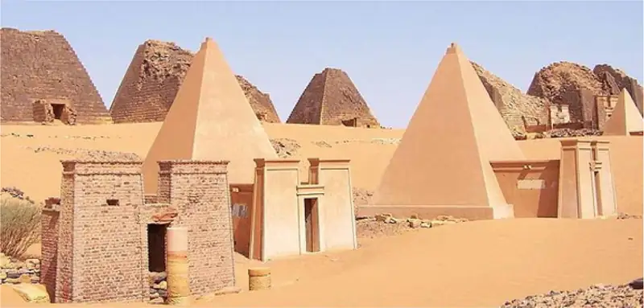
Link to Learning
Through trade and conflict, Egypt left a deep mark on Nubian culture, manifesting in art, architecture, religion, and even language. Yet Nubian culture was not entirely subsumed by Egyptian influences, and the two often coexisted in the same work of art.
Use these links to explore the Nubian art collection and Egyptian collection at the Museum of Fine Arts, Boston.
The majority of people worked in the fields and the grazing pastures. They lived in mud homes within small rural villages overseen by minor chiefs of family clans. The elite, ruling families, and artisans, on the other hand, lived in larger towns. The entire kingdom was ruled by monarchs from the reigning family. However, unlike in Egypt where succession to the throne tended to flow from father to son, in the Meroitic kingdom, the monarch was carefully selected by a group made up of local chiefs, military officials, and other high officials. While theoretically the ultimate authority in the land, the power of the kings was limited by customs, taboos, and the consent of the nobility and the priestly class. Unpopular monarchs could be and were removed if they fell out of favor with either of these groups. There was also the position of the kentake, or queen mother. The kentake exercised a degree of official power somewhere above the highest officials and below that of the king. On several occasions, the kentakes themselves, given the right circumstances, could assume complete power and even lead armies into battle.
Dueling Voices: Witnessing Kush: Kushite and Greek Perspectives
Eyewitness accounts of ancient civilizations provide invaluable primary source evidence for historians. Such sources are far scarcer than modern ones, and written accounts of ancient sub-Saharan Africa are even rarer. Often, what source material we have comes not from Africans but from outsiders—travelers, invaders, or occupiers (perhaps all three).
The first excerpt that follows is an inscription attributed to Aspalta, king of Kush (c. 600 BCE), and the other is an account by the Greek historian Herodotus (c. 430 BCE). Consider the approaches they adopted to documenting Kush and what the differences suggest about the values of their respective societies.
“Now then, the trusted commanders from the midst of the army of His Majesty were six men, while the trusted commanders and overseers of fortresses were six men. [. . .] Then they said to the entire army, “Come, let us cause our lord to appear, for we are like a herd which has no herdsman!” Thereupon this army was very greatly concerned, saying, “Our lord is here with us, but we do not know him! Would that we might know him, that we might enter in under him and work for him, . . . .” Then the army of His Majesty all said with one voice, “Still there is this god Amon-Re, Lord of the Thrones of It-Tjwy, Resident in Napata. He is also a god of Kush. Come, let us go to him. . . . . So the commanders of His Majesty and the officials of the palace went to the Temple of Amon. . . . They said to [the priests], “Pray, may this god, Amon-Re, Resident in Napata, come, to permit that he give us our lord, to revive us, to build the temples of all the gods and goddesses of Kemet, and to present their divine offerings! We cannot do a thing without this god. It is he who guides us. . . . Then the commanders of His Majesty and the officials of the palace entered into the temple and put themselves upon their bellies before this god. They said, “We have come to you, O Amon-Re, Lord of the Thrones of It-Tjwy, Resident in Napata, that you might give to us a lord, to revive us, to build the temples of the gods of Kemet and Rekhyt, and to present divine offerings. That beneficent office is in your hands—may you give it to your son whom you love!” —attributed to Aspalta, king of Kush (c. 600 BCE)”“I went as far as Elephantine [Aswan] to see what I could with my own eyes, but for the country still further south I had to be content with what I was told in answer to my questions. . . . The Ethiopians . . . are said to be the tallest and handsomest men in the whole world. In their customs they differ greatly from the rest of mankind, and particularly in the way they choose their kings; for they find out the man who is the tallest of all the citizens, and of strength equal to his height, and appoint him to rule over them. [. . .] The spies were told that most of them lived to be a hundred and twenty years old, while some even went beyond that age—they ate boiled flesh, and had for their drink nothing but milk. Among these Ethiopians copper is of all metals the most scarce and valuable. Also, last of all, they were allowed to behold the coffins of the Ethiopians, which are made (according to report) of crystal, after the following fashion: When the dead body has been dried, either in the Egyptian, or in some other manner, they cover the whole with gypsum, and adorn it with painting until it is as like the living man as possible. Then they place the body in a crystal pillar which has been hollowed out to receive it. . . . The next of kin keep the crystal pillar in their houses for a full year from the time of the death, and give it the first fruits continually, and honor it with sacrifice. After the year is out they bear the pillar forth, and set it up near the town. [. . .] Where the south declines towards the setting sun lies the country called Ethiopia, the last inhabited land in that direction. There gold is obtained in great plenty, huge elephants abound, with wild trees of all sorts, and ebony; . . . . The Ethiopians were clothed in the skins of leopards and lions, and had long bows made of the stem of the palm-leaf, not less than four cubits in length. On these they laid short arrows made of reed, and armed at the tip, not with iron, but with a piece of stone, sharpened to a point, of the kind used in engraving seals. They carried likewise spears, the head of which was the sharpened horn of an antelope; and in addition they had knotted clubs. When they went into battle they painted their bodies, half with chalk, and half with vermilion. —Herodotus, The Histories, Book III”
- What do these accounts tell us about how Nubian civilization had changed from Aspalta’s time to that of Herodotus?
- Consider how the authors’ viewpoints may have influenced their accounts and why. Is one voice more dependable than the other? Why or why not?
During the second and first centuries BCE, Roman power spread across the Mediterranean and, in the year 30 BCE, assumed control of Egypt. Around this same time, the Kushite kings of Meroe were also expanding their power northward. These two expanding powers inevitably clashed as Rome sought to secure its southern border and prevent further Meroitic expansion. In one reported encounter, the Romans came face-to-face with a possibly battle-scarred kentake leading an army. In another encounter at Syene (modern Aswan in southern Egypt), the Kushite forces of Meroe appear to have gotten the better of the Romans. Kushite soldiers pillaged the city and took with them a number of statues and other valuables, including a bronze head of the Roman emperor Augustus.
Not a group to leave such an affront unanswered, the Romans counterattacked and nearly destroyed Napata. When they finally left, they took with them several thousand Kush subjects whom they sold into slavery. Historians debate the nature of the subsequent relationship between Rome and the Meroitic Kingdom of Kush. Evidence suggests that at some point during the Augustan period, Kush was a client state of the Roman Empire. In exchange for its internal autonomy, Kush helped Rome secure its East African frontier by providing soldiers and support for garrisoned legions stationed in the kingdom.
The Kingdom of Kush reached a new high-water mark in its power and artistic achievement a few decades later under King Natakamani, in the early first century CE. During his reign, Kush also attained its maximum geographic extent, stretching from the Ethiopian foothills in the south to the Nile’s first cataract in the north. Testifying to its wealth and influence during this period are the pyramids built under Natakamani as well as the temples that were constructed and restored, including one for the lion-headed god Apademak and the Egyptian god Amun (Figure 9.18).
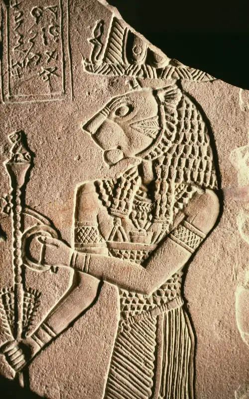
Despite earlier tensions, Meroe and Roman Egypt enjoyed mostly friendly relations for the next two centuries. During this time, however, Meroe’s power began to wane, and the kingdom came to an end sometime in the fourth century CE. Scholars are uncertain what caused its decline, although environmental degradation due to the overuse of timber for charcoal manufacture may have been a factor. Trees were being cut down faster than they could replace themselves, which would likely have led to erosion and reduced fertility of the soil, so the land could no longer support a large urban population.
In addition, the weakening of the Roman Empire and its economic contraction in the third century led to a steep decline in demand for the types of luxury goods traded through Kush, especially the ivory, enslaved peoples, perfume, exotic animals, and hardwoods on which its economy depended. Having no partners of similar size and wealth with whom to trade African goods on a large scale, the kings of Kush found that Rome’s economic crisis triggered a fiscal crisis for them. Perhaps the final blow was the rise of the kingdom of Aksum. Better placed to take advantage of the Red Sea trade, Aksum starved Kush of regional commerce. Sometime around 350, the Aksumite king Ezana invaded Meroe but found the island capital of the Kingdom of Kush had been abandoned.
9.4 North Africa’s Mediterranean and Trans-Saharan Connections¶
Learning Objectives
By the end of this section, you will be able to:
- Describe the interactions between North Africa, the Levant, and Europe
- Analyze the trade routes from North Africa to the Mediterranean, the Sahara, and the Levant
The Mediterranean coast of North Africa has been a crossroads of civilizations for millennia. Beginning in the first millennium BCE, it was occupied successively by a string of invaders, including the Phoenicians, Greeks, Romans, Vandals, and Arabs, and it has been the site of countless internal migrations, as in the case of the Mauri and Massylii peoples. One result of these interactions was a long-term process of cultural commingling, reabsorption, and acculturation that has left a rich tapestry of human societies in its wake.
North Africa and Egypt¶
The Phoenicians were responsible for the earliest known trade network that unified the Mediterranean world. A Semitic-speaking and seafaring people originally from the Levant, or eastern Mediterranean coast, the Phoenicians emerged initially from the areas around Tyre in what is present-day Lebanon (or Canaan in the Bible, which refers to the Phoenicians as the Canaanites). Around the end of the tenth century BCE, the Phoenicians began to found a series of trading posts and colonies along the Mediterranean coast, a loop of interconnected settlements that eventually stretched from Byblos in the east to Nimes and Gadir (Cadiz) in the west and Libdah (Leptis Magna) in the south (Figure 9.19). In 814 BCE, they established what would become their greatest settlement, Carthage. Located on the North African coast in modern-day Tunisia, Carthage was in an ideal position to dominate the trade activities of the western Mediterranean.
![A map of the Mediterranean Sea is shown and the land surrounding it on all sides. Europe is labeled to the north, Africa to the south, and Asia to the east. A thick green dashed line is drawn starting in the east at the island of Crete. From there it heads east to the Asian coast, splitting off to touch the island off of the coast of Lebanon, then connecting in Sidon. The line that hugs the coast passes the cities of Byblos, Sidon, and Tyre in Lebanon, heads south along the coast of Africa past Cyrere, then toward Leptis Magna. At Leptis Magna the green dashed line heads along the coast to Carthage as well as heading out to sea toward the island of Sicily and heading back to Carthage. At Carthage the line goes to Sicily and back, and to Sardinia as well as along the coast heading west to Tingi in Africa and Gadir in Spain. From Tingi it continues west along the coast of Africa and from Gadir in Spain the green line continues west up the coast of Spain and east along the coast on to the Balearic Islands. The city of Memphis in Egypt is also labeled.](img/osx-worldhist-a09-03-m-phoenic.webp)
The government of Carthage was originally a monarchy, but by the turn of the fourth century BCE, it had given way to a republic. The Carthaginian republic was singled out for praise by the Greek philosopher Aristotle, who considered it the perfect balance between monarchy, aristocracy, and democracy. By this time, Carthage had been the dominant military power of the western Mediterranean for almost a century. By 300 BCE, the city controlled dozens of the trading towns that dotted the North African coast. Thus, by the start of the third century BCE, Carthaginian power and influence could be felt along a thousand-mile stretch of the Mediterranean.
At the time of Carthage’s founding, the population of the Maghreb—the western half of North Africa, including most of present-day Morocco, Algeria, Tunisia, and Libya—spoke indigenous languages and had adapted their lives to the landscape. Those who lived on the coastal plains were mostly settled farmers, while those who lived in the Atlas Mountain range were seminomadic pastoralists, and nomadic peoples lived in the Sahara. To the Carthaginians, Greeks, and Romans, these North African natives were collectively known as Berbers1, a pejorative term equating to “barbarian.” This simplification belies the political, social, and cultural complexities of what was actually a wide range of different African ethnic groups and societies, including the Mauri, Massylii, Musulamii, Masaesylii, Garamantes, and Gaetuli. These groups had built impressive societies of their own. For example, the Garamantes developed a major urban society in the Libyan Fezzan, and the Masaesyli established the kingdom of Numidia. Over centuries of interaction, cooperation, and tension, a rich tapestry of customs, values, and traditions developed among these groups—who typically refer to themselves as Amazigh, or Imazighen, rather than Berber—to produce societies and cultural practices well suited to the Maghreb region of North Africa.
A city like Carthage, with its republican form of government and leaders who exercised political authority, levied taxes, enforced laws, and employed armed forces for defense, was foreign to the indigenous systems of the area. Early in its history, Carthage adopted a pragmatic relationship with its neighbors; it paid tribute to them to forestall attacks and facilitate good relations. But that changed after 480 BCE, when Carthage stopped paying tribute and moved to subjugate the region’s peoples. In time, not only were the coastal towns dominated by Punic-speaking elite of Carthaginian origin, but the peoples of the inland towns began to adapt and adopt Carthaginian culture. Not only did they speak Punic, the language of the Phoenicians, but on occasion they also spoke Greek, particularly if they held positions of power or engaged in trade with Carthage. Moreover, the urban elite in these towns began to emulate Carthage, and eventually they founded their own states inland, such as Mauretania, which was established by the Mauri and Massylii peoples of the Atlas Mountains.
Carthaginian control over North Africa did not go unchallenged. The most significant threat to its dominance emerged with the rise of the Roman Republic in the third century BCE. To that point, the Romans had been preoccupied with consolidating their control over the Italian peninsula south of the River Rubicon, a process finally brought to an end with the defeat of Magna Graecia (as southern Italy was then called) in the Pyrrhic War in 275 BCE. Rome’s encounter with Carthage led to three long and exhaustive conflicts known as the Punic Wars. The first began in 264 BCE, and the third wrapped up in 146 BCE.
The most famous of these is the Second Punic or Hannibalic War, during which the Carthaginian general Hannibal Barca (Figure 9.20) invaded Italy with tens of thousands of soldiers and dozens of war elephants. For over a decade, Hannibal terrorized the Romans, destroying their armies at Trebia (218 BCE), Lake Trasimene (217 BCE), and, in one of the most lethal battle days in history, the village of Cannae in 216 BCE. The Carthaginians were unable to inflict a decisive defeat on the Romans, however, and the deadlock remained unbroken until the Roman general Publius Cornelius Scipio took the war to Carthage, forcing Hannibal to return from Italy to North Africa to defend it.
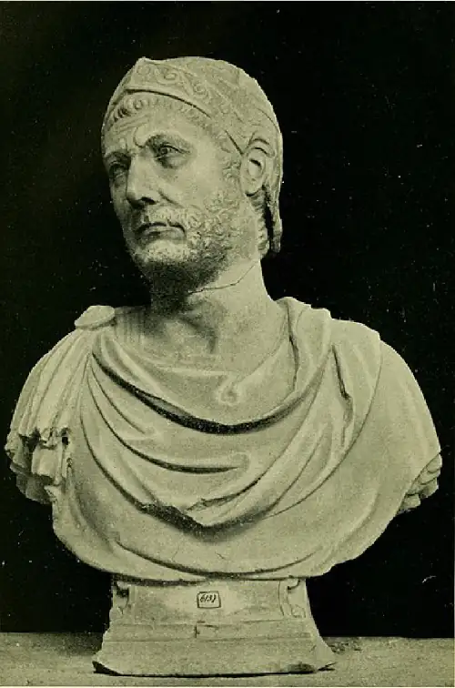
Carthage was finally defeated at the Battle of Zama in 202 BCE, a victory that earned Scipio the honorary name Africanus (Figure 9.21). Five decades later, urged on by the conservative senator Marcus Portius Cato (known to history as Cato the Censor), Rome returned to finish the job. The Third Punic War (149–146 BCE) ended with the destruction of Carthage. Tunis, some twenty miles inland, became the capital of Rome’s new African province.
![A map of the Mediterranean Sea is shown and the land surrounding it. Africa is labeled to the south. In Europe, from east to west, areas are labeled: “Iberian Tribes” over Portugal and Spain, “Gallic Tribes” over France, “German Tribes” over Germany, and “Slavic Tribes” in eastern Europe. The land east of Italy is labeled “Illyrians” and southeast from there the land is labeled “Thracians.” A coastal area in northeastern Africa is labeled “Numidians.” A thick red dashed arrow runs from Carthago Nova in the south of Spain, heading north along the coast through Saguntum, in an arc north of Massilia in France, then southeast to Trasimenus in Italy, south past Ancona and Rome, hitting Capila and then ending at Cannae. The arrow picks up again in the south of Italy heading south of Sicily across the Mediterranean Sea past Carthage and to Zama in Africa. Other cities labeled on the map from east heading around the Mediterranean include: Gadir, Taras, Kynoskephalal, Athens, Thessalonica, Byzantion, Nicomedia, Pergamon, Mazaka, Rhodes, Antioch, Byblos, Sidon, Tyre, Jerusalem, Alexandria, Memphis, Cyrene, Leptis Magna, Hippo and Tingi.](img/osx-worldhist-a09-03-m-punicwar.webp)
The absorption of North Africa into the Roman Empire greatly affected the Indigenous African peoples of the region. Carthage had needed very little from the peoples who lived beyond its hinterland. What food the population required was supplied by Carthaginian estates located on the outskirts of the city. Rome, on the other hand, needed a great deal from the Maghrebi interior, including grain and olive oil to feed the capital’s growing urban population. Decades of Roman development of the inland territory resulted in farms that, by the first decades of the Common Era, were generating hundreds of thousands of gallons of olive oil and millions of tons of wheat per year—all destined to feed the residents of Rome. This bounty earned North Africa the nickname “the breadbasket of Rome.”
The intensification of agricultural production in the Maghreb led to the institution of individual land ownership and huge seasonal migrations of nomads and their animals to the coastal plains for work. To help control the flow of people during these periods and to protect crops from migrating cattle, the Romans established limes (lee-meis), or lines of fortified frontier posts that marked out the territorial limits of Roman occupation. Agricultural production also led to new growth for the old Phoenician coastal cities, which became commercial centers for shipping produce and livestock to Rome.
Eastern North Africa was also the site of great change in antiquity. In 332 BCE, Alexander the Great, king of Macedon in Greece, conquered Egypt, and before leaving to continue his advance into western Asia, he founded the great city of Alexandria on the Nile River. Following Alexander’s death in 323 BCE, his generals warred with each other over control of the empire and eventually divided the vast territory among themselves. One officer, Ptolemy, took Egypt and founded a dynasty that ruled it for the next three centuries. Of necessity, the Ptolemies styled themselves as pharaohs to demonstrate continuity from pharaonic times through Alexander to themselves (Figure 9.22). They adapted the Egyptian style partially because they were awed by the history and grandeur of Egypt and also because the Ptolemies wanted the people to see them as legitimate rulers of Egypt, not foreigners. Like all the Hellenistic (or Greek-like) monarchs of the three-hundred-year period following the death of Alexander, they encouraged Greeks from around the Mediterranean to settle in one of the three Greek city-states established by the Macedonian conquerors, including Alexandria. The Ptolemies also enticed Jewish people from Palestine to settle in northern Egypt, making Alexandria one of the most cosmopolitan cities in all antiquity.
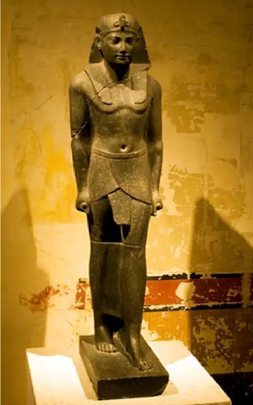
The focal point of Greek culture in Egypt was the Museon or Museum of Alexandria. This “Home of the Muses” was much more than a place to see artifacts from the past; it was also the world’s largest library, housing some 700,000 scrolls representing all the knowledge of the known world. It had laboratories for the study of human anatomy and astronomy and was the home of dozens of intellectuals, who studied everything from geography and physics to literature and geometry. In many ways, it displaced the Academy at Athens as the ancient world’s center of learning. It was at the Museon, for example, that the canonical versions of Homer’s Iliad were identified, and that Eratosthenes developed his geographic understanding of the earth and estimated its circumference as between 24,500 and 29,000 miles (today we know it is 24,900 miles).
Day-to-day governance of Ptolemaic Egypt was in the hands of Egyptian officials and of Greek officials who brought Egyptian translators. To convincingly style themselves as pharaohs, the Ptolemies turned to religion. One of Ptolemy’s first acts as ruler of Egypt was to seize the body of Alexander the Great as it was being transported from Babylon home to Macedonia. Ptolemy had an elaborate tomb built for Alexander and made it a focal point of the capital at Alexandria. He then declared Alexander a god, a move fully in keeping with the status bestowed upon him in life by Egypt’s priests of Amun at Siwah in 332 BCE. In addition, Ptolemy had a temple dedicated to the new god Serapis built in the capital city. Serapis was an extraordinary deity demonstrating how astute Egypt’s Greek rulers were. A fusion of the Egyptian deities Osiris and Apis and the Greek deities Zeus and Helios, Serapis allowed the very different subjects of Ptolemaic Egypt to find common ground in worship. To further cement their position as Egypt’s legitimate rulers, the Ptolemies carried out the religious duties of the pharaoh, including dedicating new temples to Egyptian gods, visiting shrines throughout the country, and declaring themselves the inheritors of Alexander’s godlike mantle.
The last of the Ptolemies was Cleopatra VII (Figure 9.23). A brilliant politician with a strong character, Cleopatra spoke upward of a dozen languages and was the only Greek ruler of Egypt fluent in Egyptian. Politically ambitious, she was determined to preserve what autonomy she could in the face of Rome’s growing dominance of the Mediterranean. To this end, she had an affair with the Roman general and dictator Julius Caesar and bore him a child named Caesarion. When Caesar fell afoul of the Roman Senate (whose members suspected him of wanting to be king) and was assassinated in 44 BCE, Cleopatra shifted her affection to the inheritor of Caesar’s armies, Marc Antony. This strategy was ill-fated, however, because Marc Antony was increasingly embroiled in a conflict with Octavian, Caesar’s adopted son, which soon erupted in an all-out civil war between the two.
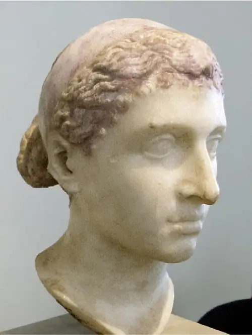
The climax of the war came at the Battle of Actium in 31 BCE, during which the naval forces of Octavian and Marcus Agrippa met to defeat those of Marc Antony and Cleopatra. Octavian pursued the vanquished pair, and soon after he invaded Egypt in 30 BCE, Marc Antony and Cleopatra died by suicide. Cleopatra’s death ushered in the start of Roman rule in Egypt as it marked the end of the Ptolemaic dynasty.
Link to the Past: Ancient Perspectives on Cleopatra
Can we ever know history with certainty? Only the smallest fraction of anything ever written in antiquity survives today, and much of that was set down long after the events and people it describes, possibly by writers hostile to their subject matter. Figures such as Cleopatra have been the source of endless ancient propaganda and character assassinations. Read the following excerpts by ancient writers describing Cleopatra, and consider the information they provide.
“Why Cleopatra, who heaped insults on our army, a woman worn out by her own attendants, who demanded the walls of Rome and the Senate bound to her rule, as a reward from her obscene husband? . . . Truly that whore, queen of incestuous Canopus, a fiery brand burned by the blood of Philip, dared to oppose our Jupiter with yapping Anubis, and forced Tiber to suffer the threats of Nile, banished the Roman trumpet with the rattle of the sistrum, chased the Liburnian prow with a poled barge, spread her foul mosquito nets over the Tarpeian Rock, and gave judgements among Marius’ weapons and statues. —Propertius, Poems III”“It would have been wrong, before today, to broach the Caecuban wines from out the ancient bins, while a maddened queen was still plotting the Capitol’s and the empire’s ruin, with her crowd of deeply-corrupted creatures sick with turpitude, she, violent with hope of all kinds, and intoxicated by Fortune’s favor. But it calmed her frenzy that scarcely a single ship escaped the flames, and Caesar reduced the distracted thoughts, bred by Mareotic wine, to true fear, pursuing her close as she fled from Rome, out to capture that deadly monster, bind her, as the sparrow-hawk follows the gentle dove or the swift hunter chases the hare, over the snowy plains of Thessaly. —Horace, Cleopatra”“For she was a woman of surpassing beauty, and at that time, when she was in the prime of her youth, she was most striking; she also possessed a most charming voice and a knowledge of how to make herself agreeable to every one. Being brilliant to look upon and to listen to, with the power to subjugate every one, even a love-sated man already past his prime, she thought that it would be in keeping with her rôle to meet Caesar, and she reposed in her beauty all her claims to the throne. She asked therefore for admission to his presence, and on obtaining permission adorned and beautified herself so as to appear before him in the most majestic and at the same time pity-inspiring guise. When she had perfected her schemes she entered the city (for she had been living outside of it), and by night without Ptolemy's knowledge went into the palace. —Cassius Dio, Roman History XLII”“For her beauty, as we are told, was in itself not altogether incomparable, nor such as to strike those who saw her; but converse with her had an irresistible charm, and her presence, combined with the persuasiveness of her discourse and the character which was somehow diffused about her behaviour towards others, had something stimulating about it. There was sweetness also in the tones of her voice; and her tongue, like an instrument of many strings, she could readily turn to whatever language she pleased. —Plutarch, Life of Antony XXVII”
- Who was Cleopatra? What was her character like? What might have motivated these widely varying descriptions of her?
- How might have these ancient accounts gotten Cleopatra wrong? How much do you think we are likely to “know” about ancient people?
Link to Learning
The tradition of interpreting and depicting Cleopatra is presented in this article.
Rome’s conquest of Egypt added yet another layer of complexity to Egyptian society. While Latin-speaking governors and administrators continued to run the affairs of state from Alexandria, they did so in Greek, which remained the language of government. Rome invested heavily in the development of Egypt’s largest cities and creating inviting cosmopolitan spaces eventually inhabited by Greeks, Jewish people, Romans, and assimilated Egyptians. Still, under the Romans, the majority of Egyptian subjects lived in rural areas. In more than two thousand villages scattered throughout the Nile delta and along the Nile valley, people labored to produce the tons of grain that supplied the imperial capital with bread. These people were also hardest hit by Roman taxation, a circumstance that inspired periodic revolts against the empire.
Roman imperial administration over North Africa remained constant until the fourth and fifth centuries CE, when the weakened Western Roman Empire confronted a new series of challenges, including widespread barbarian invasions. One invading group was the Vandals. A Germanic people originating in present-day Poland, the Vandals migrated westward in the second century CE and settled in the region of Silesia. By the third century, they had been contained in the Roman province of Pannonia (a sizable territory that included parts of modern-day Hungary, Austria, Croatia, Serbia, Bosnia and Herzegovina, and Slovenia), but they pushed west in the face of the advance of the Huns, nomadic steppe people from central Asia.
By the fifth century, Vandals had migrated to Gaul and the Iberian Peninsula. Around 430, under their leader Genseric, they were invited by Bonifacius, Rome’s governor in North Africa, to help him establish himself as a ruler independent of Rome. For the next several years, the Vandals fought Rome’s imperial forces on behalf of Bonifacius, who died at the Battle of Remini in Italy in 432. Rome finally agreed to a peace treaty that granted the Vandals control of Mauretania and the western half of Numidia. Unsatisfied, Genseric then pursued a plan to extend his control over Roman North Africa by breaking the treaty and invading Carthage, which he seized in 439.
The Vandals remained in control of the Maghreb region of Roman North Africa until the early sixth century, when Byzantine forces under the general Belisarius reconquered the territory and forced the Vandal king Gelimer to surrender in 534. Less than a century later, a new power from the east threatened the Byzantine position in North Africa. Beginning in the 640s, the armies of Islam advanced, conquering Byzantine Egypt in 642. Using Egypt as a forward position, they then launched successive invasions across the region until the final Byzantine strongholds of North Africa including Carthage fell. By 709, the whole of North Africa had been conquered.
North African and Trans-Saharan Trade¶
Trans-Saharan trade—the movement of goods between oases and larger settlements in North and West Africa—has existed in one form or another since at least the ninth century BCE. Over time, this system grew from the relatively localized trade in agricultural products and iron goods centered on the Phoenician city of Carthage. It became a continent-wide system of exchange that moved commodities such as copper, salt, ivory, enslaved people, textiles, and gold between what is now Senegal in West Africa and Egypt in the east, reaching as far south as Niger and as far east as Somalia in the Horn of Africa (Figure 9.24). At its height, the trans-Saharan exchange of goods influenced commerce and finance across the whole of North Africa, as well as the economies of Europe and the Near East. This system of trade was made possible by the nomadic peoples of North and West Africa.
![A map of northwestern Africa is shown with the Atlantic Ocean labeled at the bottom of the map. Four small areas in the southwestern part of the area are highlighted gold representing “Gold fields.” They are labeled Bambuk, Boure, and Lobi. The fourth one close to the coast is not labeled. A red dashed line is shown connecting cities all throughout the map in a criss-cross pattern. The connected cities, from north to south, are: Tunis, Kairouan, Tahert, Tlemcen, Fes, Ouargla, Marrakech, Sijilmasa, Ghadames, Nul, Tamdoult, Tuat, Tamentit, Tanghaza, Ghat, Idjil, Ouadane, Araouane, Tadmekka, Aoudaghost, Oualata, Timbuktu, Takedda, Gao, and Koumbi Saleh. The city of Djenne is listed but not connected. The red dashed lines also run to the gold fields at Bambuk and Boure from Koumbi Saleh.](img/osx-worldhist-a09-03-m-tstrade.webp)
In the ninth century BCE, African farmers supplied the Phoenician towns of North Africa with food. In exchange, the Phoenicians introduced these peoples to innovative technologies such as ironworking. Over centuries of interaction, the two groups intermarried and became an integral part of North African society. From around the seventh century BCE, Phoenician merchants relied on the herders of the Atlas Mountains (in present-day Morocco) and the stretch of the northern Sahara to the south.
Indigenous peoples of North Africa had long maintained contact across the Sahara, but it could be tenuous due to the inherent risks of desert travel, including attacks on trading caravans and slave raids by the Garamantes desert people of Libya. Helping facilitate contact in the desert extremes were small settlements of seminomadic peoples at a fragile line of oases forging a point-to-point trading system. Thus, early trade in the Sahara was a matter not of transporting goods across the vast desert expanse but rather of passing them from oasis to oasis. A principal commodity exchanged during this early stage of trade was salt, which was carried to the south and acted as a sort of currency. Salt was highly prized in the agricultural communities south of the Sahara where the mineral is scarce. This is because humans require salt to maintain healthy bodily functions and must regularly consume salt to replace its loss through sweat and urination. The Saharan traders knew where the salt was located, accessed it for themselves, and traded in the substance for goods they could otherwise obtain. Only gradually were highly valuable trading goods introduced, such as gold and copper, which were then brought across the desert from tropical West Africa to the far reaches of the North African coast.
During the period of Carthaginian dominance in Tunisia, goods were carried by pack animals such as mules, horses, and donkeys between the Phoenician imperial capital and the independent African kingdoms in the mountainous and coastal regions to its west. These kingdoms, known to the Romans as Mauretania and Numidia, had extended their control of much of North Africa by the second century BCE as Carthage declined and Rome ascended. For a time, the Romans and the North African kingdoms enjoyed a relatively peaceful and prosperous alliance, but gradual Roman interference in the domestic political affairs of the Numidian state caused their relations to sour, and eventually Rome conquered both Numidia and Mauretania.
In typical fashion, the Romans established large estates as well as towns in the newly conquered territories. Their administration outside these enclaves reached only so far, however. Beyond them, the region remained under the dominance of the people native to the area, in both language and culture. But it was in the strategic interests of Rome to secure the southernmost frontiers of these new provinces. Doing so effectively required not only establishing a border but also patrolling it. This was impossible with horses, so the Romans used the dromedary camel (one-hump camel) (Figure 9.25). Biologically equipped to survive desert extremes, the camel was the ideal means to help secure Rome’s new southernmost frontier.
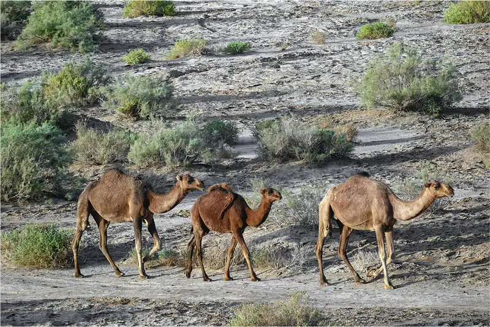
The introduction of the dromedary camel originally from Arabia into North Africa revolutionized the trans-Saharan trade, but its adoption across the region was slow. The first camels in North Africa may have reached Egypt by as early as the ninth century BCE, but it was not until the third and fourth centuries CE that its use spread to the African nomad groups of the northern Sahara, likely helped along by Roman use of the animal. By the fifth century, it had become a major form of transportation in the region. The camel had many advantages over other pack animals. It could maintain a steady pace over much longer distances than oxen, and it could carry upward of three hundred pounds of goods an average of fifteen to eighteen miles a day. Further, the camel’s capacity to store fat and water enabled it to travel up to ten days without stopping for fresh water, more than twice the time and distance of almost every other pack animal. Added to this was the camel’s unique splayed foot, which allowed it to walk easily in the soft, sandy conditions of the Saharan environment.
The camel enabled desert nomads to reach more distant oases than ever before and so open entirely new routes across the desert. Although desert travel remained precarious and filled with risk, it certainly became more reliable. For the first time, it was possible for desert travelers to consider dispatching large-scale and regular long-distance trading caravans across the Sahara. Despite this, desert transport remained largely in the hands of the nomadic peoples of the region, principally the Sanhaja in the west and the Tuareg of the central and southern Sahara. Although trans-Saharan trade was growing at this time, it was not yet full-time work, so these groups remained largely nomadic pastoralists, harvesting date palms and grazing their flocks and herds at oases.
In many cases, they tended goats and sheep, but they often also had camel and cattle and occasionally horses. These animals all had to graze, and when they were unable to do so at oases because of either distance or weather, the nomads were forced to find other grazing land. This was particularly the case during the hottest and driest seasons, when the nomads migrated their flocks and herds to the better grazing areas of the Maghreb in the north or the Sahel in the south. Inevitably, this brought them into contact with the more settled agricultural peoples of these areas, and often into conflict as they competed for precious resources in a hostile environment. Beyond these settlements, the nomadic pastoralists dominated the Sahara. Yet there were other peoples in the desert, including small groups such as the Haratin who also called the oases home. They harvested dates and dug salt to exchange for food but were often kept in a subordinate position by the nomads, who controlled the oases.
As the camel transformed desert transport, the products of sub-Saharan Africa became more readily available to the Mediterranean world. Trade in West African gold expanded, demand increased for such goods as ivory and ostrich feathers, and large animals were hunted to extinction in North Africa. As cross-desert traffic grew, several new settlements developed to aid the movement of goods north and south of the Sahara, including Sijilmasa, Ghat, Gao, Awdaghust, and Kano. At sites such as these, goods were exchanged, and camel caravans were unloaded and replenished to continue their journey across the desert. While the desert traffic in goods remained in the hands of nomads, the actual demand for and exchange of goods was largely the work of peoples of settled societies to the north and south of the Sahara.
Chapter Review¶
Key Terms¶
- Bantu migrations
- the millennia-long expansion of Bantu-speaking peoples southward from West and Central Africa, spreading a common cultural foundation that included language, farming, and ironworking
- Berbers
- the name used by Carthaginians, Greeks, and Romans to describe the native peoples of the Maghreb; today, this population generally self-identifies as Amazigh, or Imazighen
- biome
- a community of vegetation and wildlife adapted to a particular climate
- cataract
- a place in a river where the otherwise placid flow is upset by a waterfall, a shallow portion, or the presence of boulders
- deffufa
- a type of monumental mud-brick structure unique to Nubian civilization and believed to have served a religious function
- kentake
- a Kushite title that roughly translates to “queen mother” and was a powerful position in Meroitic Kush
- Maghreb
- the western half of North Africa, including most of present-day Morocco, Algeria, Tunisia, and Libya
- Nubia
- the name Egyptians gave to the expansive area south of the first cataract and extending into sub-Saharan Africa; it included the Kingdom of Kush
- Sahel
- an east–west belt of semiarid grassland that forms a transitional zone between the Sahara to the north and the equatorial rainforest to the south
- savanna
- a grassy plain with scattered trees found to the north and south of the tropical African rainforest
Summary¶
9.1 Africa’s Geography and Climate¶
Geography played a critical role in the development of early human civilization in Africa. Climate conditions such as temperatures and rainfall dictated agricultural growing seasons, and soil fertility governed what crops—if any—could be grown in a particular area, as well as the availability of fodder for grazing animals. In particular, the availability of water dictated the likelihood of fixed settlement. A wide range of peoples populated Africa’s diverse geography, from the desert-dwelling San to the Baka people of the rainforest. All developed lifestyles and cultures that were not only suited to their geography but were also greatly influenced by it.
9.2 The Emergence of Farming and the Bantu Migrations¶
The earliest evidence of plant domestication in Africa has been uncovered in three different areas: Egypt, the eastern Sahara, and West Africa. In Egypt, agricultural technologies were introduced from southwest Asia, where the Neolithic Revolution first occurred. From there, wheat and barley agriculture spread across North Africa over thousands of years. In the other two locations, plant domestication appears to have emerged independently. In these locations, early Neolithic societies grew crops of sorghum, yams, watermelons, and African rice. In Central and West Africa, the farming of these crops was aided greatly by iron technology.
Once believe to have been introduced to Africa through Egypt, scholars now generally agree that iron smelting was developed independently in Central Africa. Iron tools allowed sub-Saharan African farmers to more efficiently clear forested areas to establish farms. By at least 500 BCE, Bantu-speaking peoples migrating across Africa were using iron tools to aid them in their gradual expansion.
The Bantu speakers likely originated in West and Central Africa and began spreading east and south as early as 3000 BCE. Their migrations were gradual, protracted, and took a few different routes. As they spread, they established farms, introduced others to agricultural practices, and dramatically transformed the linguistic makeup of much of subequatorial Africa.
9.3 The Kingdom of Kush¶
Long the center of prehistoric African civilization, the region of Nubia, between Aswan in southern Egypt and the confluence of the Blue and White Nile Rivers in northern Sudan, flourished thanks to its links with Nile-based trade and its well-watered hinterland. Beginning with the city-state of Kerma in the early second millennium BCE, the Nubian people of Kush steadily absorbed Egyptian culture, including its language, religious practices, and architecture. During periods of Egyptian weakness, such as during the Second Intermediate Period, the Kingdom of Kush was able to achieve political independence. Similarly, during periods of great Egyptian regional strength, Kush was again subjugated by Egypt. Incredibly, in the eighth century BCE, the Kushite king Piye turned the tables on Egypt and placed himself on the Egyptian throne.
Once Egypt was conquered by Assyria in seventh century BCE, the Kingdom of Kush retreated to Meroe far to the south of Egypt. There they built up a kingdom known for its iron production and trade goods. For many centuries, the kingdom blended its many Egyptian cultural practices with Nubian traditions to develop its own distinctive styles and even writing system. After confronting Rome in Egypt in the first century BCE, it settled into a centuries-long trading relationship with the imperial Roman province of Egypt until it finally declined and died out sometime in the fourth century CE.
9.4 North Africa’s Mediterranean and Trans-Saharan Connections¶
From the earliest Phoenician forays across the sea in the first millennium BCE, North Africa played an increasingly prominent role in the trade-based economies of the Mediterranean and the polities that surrounded it. It was the source of rare and valuable commodities such as salt, gold, and ivory, transported from the African interior across the Sahara by Indigenous nomadic peoples and long sought after by Egyptians, Carthaginians, Greeks, Romans, Vandals, and Arabs, each in their turn. Many parts of the Mediterranean coastline of North Africa were also renowned for their fertility, particularly the Maghrebi region immediately surrounding Carthage and the Egyptian Nile delta, whose bountiful lands constituted the “breadbasket” of Rome.
Egypt’s stability was thus critically important. When Cleopatra of Egypt began influencing Roman officials, including Julius Caesar and Marc Antony, to the benefit of her kingdom, Rome responded with force, and Egypt came under Roman rule. Three hundred years later, the Romans’ introduction of the camel to North Africa enlarged the practical scope of truly trans-Saharan trade from the far south of the great desert to the Mediterranean coast.
Review Questions¶
9.1 Africa’s Geography and Climate¶
1.
2.
3.
4.
9.2 The Emergence of Farming and the Bantu Migrations¶
5.
6.
7.
8.
9.
9.3 The Kingdom of Kush¶
10.
11.
12.
13.
14.
15.
9.4 North Africa’s Mediterranean and Trans-Saharan Connections¶
16.
17.
18.
19.
Check Your Understanding Questions¶
9.1 Africa’s Geography and Climate¶
20.
21.
22.
9.2 The Emergence of Farming and the Bantu Migrations¶
23.
24.
25.
9.3 The Kingdom of Kush¶
26.
27.
28.
9.4 North Africa’s Mediterranean and Trans-Saharan Connections¶
29.
30.
31.
Application and Reflection Questions¶
9.1 Africa’s Geography and Climate¶
32.
33.
9.2 The Emergence of Farming and the Bantu Migrations¶
34.
35.
36.
37.
9.3 The Kingdom of Kush¶
38.
39.
9.4 North Africa’s Mediterranean and Trans-Saharan Connections¶
40.
41.
Adapted from World History, Volume 1, to 1500 by OpenStax, licensed under CC BY 4.0. Access the original for free at openstax.org. Changes: converted to the web reading format of The Open Book Project.
-
There is a growing awareness about the use of the term Berber to describe indigenous North Africans, many of whom self-identify as Amazigh, or Imazighen (plural). With this understanding, although we have introduced the term Berber as the most commonly used name in English, we have generally preferred to use the term Amazigh in this text. ↩